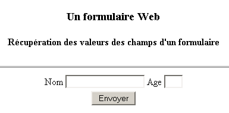
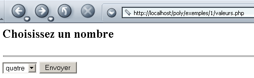
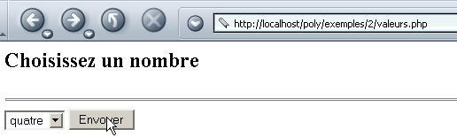
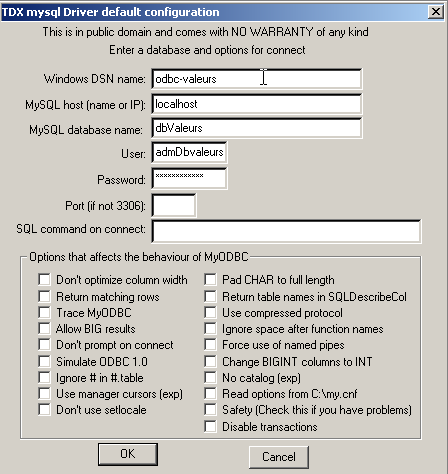
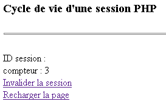
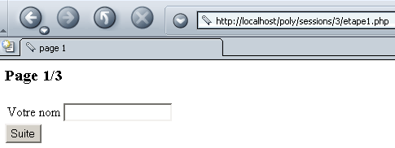
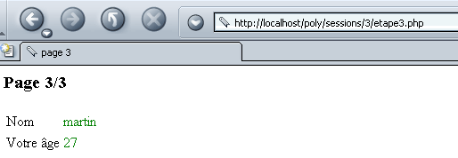

3. Introduction à la programmation web en PHP
3.1. Programmation PHP
Rappelons ici que PHP est un langage à part entière et que s'il est surtout utilisé dans le cadre du développement d'applications pour le web, il peut être utilisé dans d'autres contextes. Le document "PHP par l'exemple" disponible à l'URL http://shiva.istia.univ-angers.fr/~tahe/pub/php/php.pdf donne les bases du langage. On suppose ici que celles-ci sont acquises. Montrons avec un exemple simple la procédure d'exécution d'un programme PHP sous windows. Le code suivant a été sauvegardé sous le nom coucou.php.
L'exécution de ce programme se fait dans une fenêtre Dos de Windows :
dos>"e:\program files\easyphp\php\php.exe" coucou.php
X-Powered-By: PHP/4.3.0-dev
Content-type: text/html
coucou
On remarquera que l'interpréteur PHP envoie par défaut :
- l'interpréteur PHP est php.exe et se trouve normalement dans le répertoire <php> d'installation du logiciel.
- des entêtes HTTP X-Powered-By et Content-type :
- la ligne vide séparant les entêtes HTTP du reste du document
- le document formé ici du texte écrit par la fonction echo
3.2. Le fichier de configuration de l'interpréteur PHP
Le comportement de l'interpréteur PHP est paramétré par un fichier de configuration appelé php.ini et rangé, sous windows, dans le répertoire de windows lui-même. C'est un fichier de taille conséquente puisque sous windows et pour la version 4.2 de PHP, il fait près de 1000 lignes dont heureusement les trois-quarts sont des commentaires. Examinons quelques-uns des attributs de configuration de PHP :
permet d'inclure des instructions entre des balises <? >. A off, il faudrait les inclure entre <?php ... > | |
à on permet d'utiliser la syntaxe <% =variable %> utilisée par la technologie asp (Active Server Pages) | |
permet l'envoi de l'entête HTTP X-Powered-By: PHP/4.3.0-dev. A off, cet entête est supprimé. | |
fixe l'étendue du suivi d'erreurs. Ici toutes les erreurs (E_ALL) sauf les avertissements en cours d'exécution (~E_NOTICE) seront signalées | |
à on, place les erreurs dans le flux HTML envoyé au client. Celles-ci sont donc visualisées dans le navigateur. Il est conseillé de mettre cette option à off. | |
les erreurs seront mémorisées dans un fichier | |
mémorise la dernière erreur survenue dans la variable $php_errormsg | |
fixe le fichier de mémorisation des erreurs (si log_errors=on) | |
à on, un certain nombre de variables deviennent globales. Considéré comme un trou de sécurité. | |
génère par défaut l'entête HTTP : Content-type: text/html | |
la liste des répertoires qui seront explorés à la recherche des fichiers requis par des directives include ou require | |
le répertoire où seront sauvegardés les fichiers mémorisant les différentes sessions en cours. Le disque concerné est celui où a été installé PHP. Ici /temp désigne e:\temp |
Ce fichier de configuration influe sur la portabilité du programme php écrit. En effet, si une application web doit récupérer la valeur d'un champ C d'un formulaire web, elle pourra le faire de diverses façons selon que la variable de configuration register_globals a la valeur on ou off :
- off : la valeur sera récupérée par $HTTP_GET_VARS["C"] ou _GET["C"] ou $HTTP_POST_VARS["C"] ou $_POST["C"] selon la méthode (GET/POST) utilisée par le client pour envoyer les valeurs du formulaire
- on : idem ci-dessus plus $C, car la valeur du champ C a été rendue globale dans une variable portant le même nom que le champ
Si un développeur écrit un programme en utilisant la notation $C car le serveur web/php qu'il utilise à la variable register_globals à on, ce programme ne fonctionnera plus s'il est porté sur un serveur web/php où cette même variable est à off. On cherchera donc à écrire des programmes en évitant d'utiliser des fonctionnalités dépendant de la configuration du serveur web/php.
3.3. Configurer PHP à l'exécution
Pour améliorer la portabilité d'un programme PHP, on peut fixer soi-même certaines des variables de configuration de PHP. Celles-ci sont modifiées le temps de l'exécution du programme et seulement pour lui. Deux fonctions sont utiles dans ce processus :
rend la valeur de la variable de configuration confVariable | |
fixe la valeur de la variable de configuration confVariable |
Voici un exemple où on fixe la valeur de la variable de configuration track_errors :
<?php
// valeur de la variable de configuration track_errors
echo "track_errors=".ini_get("track_errors")."\n";
// changement de cette valeur
ini_set("track_errors","off");
// vérification
echo "track_errors=".ini_get("track_errors")."\n";
?>
A l'exécution, on a les résultats suivants :
E:\data\serge\web\php\poly\intro>"E:\Program Files\EasyPHP\php\php.exe" conf1.php
Content-type: text/html
track_errors=1
track_errors=off
La valeur de la variable de configuration track_errors était initialement 1 (~on). On la fait passer à off. On retiendra que si notre application doit s'appuyer sur certaines valeurs des variables de configuration, il est prudent d'initialiser celles-ci dans le programme lui-même.
3.4. Contexte d'exécution des exemples
Les exemples de ce polycopié seront exécutés avec la configuration suivante :
- PC sous Windows 2000
- serveur Apache 1.3
- PHP 4.3
La configuration du serveur Apache est faite dans le fichier httpd.conf. Les lignes suivantes indiquent à Apache de charger PHP comme module intégré à Apache et de passer à l'interpréteur PHP tout requête visant un document ayant certains suffixes dont .php. C'est le suffixe par défaut que nous utiliserons pour nos programmes php.
LoadModule php4_module "E:/Program Files/EasyPHP/php/php4apache.dll"
AddModule mod_php4.c
AddType application/x-httpd-php .phtml .pwml .php3 .php4 .php .php2 .inc
Par ailleurs, nous avons défini pour Apache, un alias poly :
Alias "/poly/" "e:/data/serge/web/php/poly/"
<Directory "e:/data/serge/web/php/poly">
Options Indexes FollowSymLinks Includes
AllowOverride All
#Order allow,deny
Allow from all
</Directory>
Appelons <poly> le chemin e:/data/serge/web/php/poly. Si nous voulons demander avec un navigateur le document doc.php au serveur Apache, nous utiliserons l'URL http://localhost/poly/doc.php. Le serveur Apache reconnaîtra dans l'URL l'alias poly et associera alors l'URL /poly/doc.php au document <poly>\doc.php.
3.5. Un premier exemple
Écrivons une première application web/php. Le texte suivant est enregistré dans le fichier heure.php :
<html>
<head>
<title>Une page php dynamique</title>
</head>
<body>
<center>
<h1>Une page PHP générée dynamiquement</h1>
<h2>
<?php
$maintenant=time();
echo date("j/m/y, h:i:s",$maintenant);
?>
</h2>
<br>
A chaque fois que vous rafraîchissez la page, l'heure change.
</body>
</html>
Si nous demandons cette page avec un navigateur, nous obtenons le résultat suivant :

La partie dynamique de la page a été générée par du code PHP :
Que s'est-il passé exactement ? Le navigateur a demandé l'URL http://localhost/poly/intro/heure.php. Le serveur web (dans l'exemple Apache) a reçu cette demande et a détecté, à cause du suffixe .php du document demandé, qu'il devait faire suivre cette demande à l'interpréteur PHP. Celui-ci analyse alors le document heure.php et exécute toutes les portions de code situées entre les balises <?php > et remplace chacune d'elles par les lignes écrites par les instructions PHP echo ou print. Ainsi l'interpréteur PHP va exécuter la portion de code ci-dessus et la remplacer par la ligne écrite par l'instruction echo :
Une fois que toutes les portions de code PHP ont été exécutées, le document PHP est devenu un simple document HTML qui est alors envoyé au client.
On cherchera à éviter au maximum de mélanger code PHP et code HTML. Dans ce but, on pourrait réécrire l'application précédente de la façon suivante :
<!-- code PHP -->
<?php
// on récupère l'heure du moment
$maintenant=time();
$maintenant=date("j/m/y, h:i:s",$maintenant);
?>
<!-- code HTML -->
<html>
<head>
<title>Une page php dynamique</title>
</head>
<body>
<center>
<h1>Une page PHP générée dynamiquement</h1>
<h2>
<?php echo $maintenant ?>
</h2>
<br>
A chaque fois que vous rafraîchissez la page, l'heure change.
</body>
</html>
Le résultat obtenu dans le navigateur est identique :

La seconde version est meilleure que la première car il y a moins de code PHP dans le code HTML. La structure de la page est ainsi plus visible. On peut aller plus loin en mettant le code PHP et le code HTML dans deux fichiers différents. Le code PHP est stocké dans le fichier heure3.php :
<!-- code PHP -->
<?php
// on récupère l'heure du moment
$maintenant=time();
$maintenant=date("j/m/y, h:i:s",$maintenant);
// on affiche la réponse
include "heure3-page1.php";
?>
Le code HTML est lui stocké dans le fichier heure3-page1.php :
<!-- code HTML -->
<html>
<head>
<title>Une page php dynamique</title>
</head>
<body>
<center>
<h1>Une page PHP générée dynamiquement</h1>
<h2>
<?php echo $maintenant ?>
</h2>
<br>
A chaque fois que vous rafraîchissez la page, l'heure change.
</body>
</html>
Lorsque le navigateur demandera le document heure3.php, celui sera chargé et analysé par l'interpréteur PHP. A la rencontre de la ligne
l'interpréteur va inclure le fichier heure3-page1.php dans le code source de heure3.php et l'exécuter. Ainsi tout se passe comme si on avait le code PHP suivant :
<!-- code PHP -->
<?php
// on récupère l'heure du moment
$maintenant=time();
$maintenant=date("j/m/y, h:i:s",$maintenant);
?>
<!-- code HTML -->
<html>
<head>
<title>Une page php dynamique</title>
</head>
<body>
<center>
<h1>Une page PHP générée dynamiquement</h1>
<h2>
<?php echo $maintenant ?>
</h2>
<br>
A chaque fois que vous rafraîchissez la page, l'heure change.
</body>
</html>
Le résultat obtenu est le même qu'auparavant :

La solution de mettre les codes PHP et HTML dans des fichiers différents sera adoptée par la suite. Elle présente divers avantages :
- la structure des pages envoyées au client n'est pas noyée dans du code PHP. Ainsi elles peuvent être maintenues par un "web designer" ayant des compétences graphiques mais peu de compétences en PHP.
- le code PHP sert de "frontal" aux requêtes des clients. Il a pour but de calculer les données nécessaires à la page qui sera renvoyée en réponse au client.
La solution présente cependant un inconvénient : au lieu de nécessiter le chargement d'un seul document, elle nécessite le chargement de plusieurs documents d'où une possible perte de performances.
3.6. Récupérer les paramètres envoyés par un client web
3.6.1. par un POST
Considérons le formulaire suivant où l'utilisateur doit donner deux informations : un nom et un age.

Lorsque l'utilisateur a rempli les champs Nom et Age, il appuie ensuite sur le bouton Envoyer qui est de type submit. Les valeurs du formulaire sont alors envoyées au serveur. Celui-ci renvoie le formulaire avec de plus un tableau listant les valeurs qu'il a reçues :

Le navigateur demande le formulaire à l'application nomage.php suivante :
<?php
// a-t-on les paramètres attendus ?
$post=isset($_POST["txtNom"]) && isset($_POST["txtAge"]);
if($post){
// on récupère les paramètres txtNom et txtAge "postés" par le client
$nom=$_POST["txtNom"];
$age=$_POST["txtAge"];
} else {
$nom="";
$age="";
}//if
// affichage de la page
include "nomage-p1.php";
?>
Quelques explications :
- un champ de formulaire HTML appelé champ peut être envoyé au serveur par la méthode GET ou la méthode POST. S'il est envoyé par la méthode GET, le serveur peut le récupérer dans la variable $_GET["champ"] et dans la variable $_POST["champ"] s'il est envoyé par la méthode POST.
- l'existence d'une donnée peut être testée avec la fonction isset(donnée) qui rend true si la donnée existe, false sinon.
- l'application nomage.php construit trois variables : $nom pour le nom du formuaire, $age pour l'âge et $post pour indiquer s'il y a eu des valeurs "postées" ou non. Ces trois variables sont transmises à la page nomage-p1.php. On notera que si celle-ci participe à l'élaboration de la réponse au client, celui-ci n'en a pas connaissance. Pour lui, c'est l'aplication nomage.php qui lui répond.
- la première fois qu'un client demande l'aplication nomage.php on a $post à faux. En effet, lors de ce premier appel, aucune valeur de formulaire n'est transmise au serveur.
La page nomage-p1.php est la suivante :
<html>
<head>
<title>Formulaire web</title>
</head>
<body>
<center>
<h3>Un formulaire Web</h3>
<h4>Récupération des valeurs des champs d'un formulaire</h4>
<hr>
<form name="frmPersonne" method="post">
<table>
<tr>
<td>Nom</td>
<td><input type="text" value="<?php echo $nom ?>" name="txtNom" size="20"></td>
<td>Age</td>
<td><input type="text" value="<?php echo $age ?>" name="txtAge" size="3"></td>
<tr>
</table>
<input type="submit" name="cmdEffacer" value="Envoyer">
</form>
</center>
<hr>
<?php
// y-at-il eu des valeurs postées ?
if ($post) {
?>
<h4>Valeurs récupérées</h4>
<table border="1">
<tr>
<td>Nom</td><td><?php echo $nom ?></td>
<td width="10"></td>
<td>Age</td><td><?php echo $age ?></td>
<tr>
</table>
<?php } ?>
</body>
</html>
L'application nomage-p1.php présente le formulaire frmPersonne. Celui est défini par la balise :
L'attribut action de la balise n'étant pas définie, le navigateur transmettra les données du formulaire à l'URL qu'il a interrogée pour l'avoir, c.a.d. l'application nomage.php.
Distinguons les deux cas d'appel de l'application nomage.php :
- C'est la première fois que l'utilisateur l'appelle. L'application nomage.php appelle donc l'application nomage-p1.php en lui fournissant les valeurs ($nom,$age,$post)=("","",faux). L'application nomage-p1.php affiche alors un formulaire vide.
- L'utilisateur remplit le formulaire et utilise le bouton Envoyer (de type submit). Les valeurs du formulaire (txtNom, txtAge) sont alors "postées" (method="post" dans <form>) à l'application nomage.php (attribut action non défini dans <form>). L'application nomage.php calcule ($nom,$age,$post)=(txtNom,txtAge,vrai) et les transmet à l'application nomage-p1.php qui affiche alors un formulaire déjà rempli ainsi que le tableau des valeurs récupérées.
3.6.2. par un GET
Dans le cas où les valeurs du formulaire sont transmises au serveur par un GET, l'application nomage.php devient l'application nomage2.php suivante :
<?php
// a-t-on les paramètres attendus ?
$get=isset($_GET["txtNom"]) && isset($_GET["txtAge"]);
if($get){
// on récupère les paramètres txtNom et txtAge "GETTés" par le client
$nom=$_GET["txtNom"];
$age=$_GET["txtAge"];
} else {
$nom="";
$age="";
}//if
// affichage de la page
include "nomage-p2.php";
?>
L'application nomage-p2.php est identique à l'application nomage-p1.php aux détails près suivants :
- la balise form est modifiée :
- l'application récupère maintenant une variable $get plutôt que $post :
A l'exécution, lorsque des valeurs sont saisies dans le formulaire et envoyées au serveur, le navigateur reflète dans son champ URL le fait que les valeurs ont été envoyées par la méthode GET :

3.7. Récupérer les entêtes HTTP envoyés par un client web
Lorsqu'un navigateur fait une demande à un serveur web, il lui envoie un certain nombre d'entêtes HTTP. Il est parfois intéresant d'avoir accès à ceux-ci. On peut s'aider dans un premier temps du tableau associatif $_SERVER. Celui-ci contient diverses informations qui lui sont données par le serveur web, dont entre-autres les entêtes HTTP fournis par le client. Considérons le programme suivant qui affiche toutes les valeurs du tableau $_SERVER :
<?php
// affiche les variables liées au serveur web
// on envoie du texte simple
header("Content-type: text/plain");
// parcours du tableau associatif $_SERVER
reset($_SERVER);
while (list($clé,$valeur)=each($_SERVER)){
echo "$clé : $valeur\n";
}//while
?>
Sauvegardons ce code dans headers.php et demandons cette URL avec un navigateur :

Nous récupérons un certain nombre d'informations dont les entêtes HTTP envoyés par le navigateur. Ceux-ci sont les valeurs associées aux clés commençant par HTTP. Détaillons certaines des informations obtenues ci-dessus :
types de documents acceptés par le client web | |
types de caractères acceptés dans les documents | |
types d'encodages acceptés pour les documents | |
types de langues acceptées pour les documents | |
type de connexion avec le serveur. Keep-Alive : le serveur doit maintenir la liaison ouverte lorsqu'il aura donné sa réponse | |
? durée maximale d'ouverture de la liaison | |
machine hôte interrogée par le client | |
identité du client | |
adresse IP du client | |
port de communication utilisé par le client | |
protocole HTTP utilisé par le serveur | |
méthode d'interrogation utilisée par le client (GET ou POST) | |
requête ?param1=val1¶m2=val2&... placée derrière l'URL demandée (méthode GET) |
En modifiant légèrement le code du programme précédent, nous pouvons ne récupérer que les entêtes HTTP :
<?php
// affiche les variables liées au serveur web
// on envoie du texte simple
header("Content-type: text/plain");
// parcours du tableau associatif $_SERVER
reset($_SERVER);
while (list($clé,$valeur)=each($_SERVER)){
// entête HTTP ?
if(strtolower(substr($clé,0,4))=="http")
echo substr($clé,5)." : $valeur\n";
}//while
?>
Le résultat obtenu dans le navigateur est le suivant :

Si on veut un entête HTTP précis, on écrira par exemple $_SERVER["HTTP_ACCEPT"].
3.8. Récupérer des informations d'environnement
Le serveur web/php s'exécute dans un environnement qu'on peut connaître via le tableau $_ENV qui mémorise diverses caractéristiques de l'environnement d'exécution. Considérons l'application env1.php suivante :
<?php
// affiche les variables liées au serveur web
// on envoie du texte simple
header("Content-type: text/plain");
// parcours du tableau associatif $_ENV
reset($_ENV);
while (list($clé,$valeur)=each($_ENV)){
echo "$clé : $valeur\n";
}//while
?>
Elle donne le résultat suivant dans un navigateur (vue partielle) :

On voit par exemple ci-dessus que le serveur web/php s'exécute sous l'OS Windows NT.
3.9. Exemples
3.9.1. Génération dynamique de formulaire - 1
Nous prenons comme exemple la génération d'un formulaire n'ayant qu'un contrôle : un combo. Le contenu de ce combo est construit dynamiquement avec des valeurs prises dans un tableau. Dans la réalité, elles sont souvent prises dans une base de données. Le formulaire est le suivant :

Si sur l'exemple ci-dessus, on fait Envoyer, on obtient la réponse suivante :

Le code HTML du formulaire initial, une fois celui-ci généré, est le suivant :
<html>
<head>
<title>Génération de formulaire</title>
</head>
<body>
<h2>Choisissez un nombre</h2>
<hr>
<form name="frmvaleurs" method="post" action="valeurs.php">
<select name="cmbValeurs" size="1">
<option>un</option>
<option>deux</option>
<option>trois</option>
<option>quatre</option>
<option>cinq</option>
<option>six</option>
<option>sept</option>
<option>huit</option>
<option>neuf</option>
<option>dix</option>
</select>
<input type="submit" value="Envoyer" name="cmdEnvoyer">
</form>
</body>
</html>
L'application PHP est composée d'une page principale valeurs.php qui est appelée aussi bien pour obtenir le formulaire initial (la liste des valeurs) que pour traiter les valeurs de celui-ci et fournir la réponse (la valeur choisie). L'application génère deux pages différentes :
- celle du formulaire initial qui sera générée par le programme valeurs-p1.php
- celle de la réponse fournie à l'utilisateur qui sera générée par le programme valeurs-p2.php
L'application valeurs.php est la suivante :
<?php
// le tableau des valeurs
$valeurs=array("un","deux","trois","quatre","cinq","six","sept","huit","neuf","dix");
// a-t-on les paramètres attendus
$requêteVide=! isset($_POST["cmbValeurs"]);
// on récupère le choix de l'utilisateur
if ($requêteVide){
// requête initiale
include "valeurs-p1.php";
}else{
// réponse à un POST
$choix=$_POST["cmbValeurs"];
include "valeurs-p2.php";
}
?>
Elle définit le tableau des valeurs et appelle valeurs-p1.php pour générer le formulaire initial si la requête du client était vide ou valeurs-p2.php pour générer la réponse si on avait une requête valide. Le programme valeurs1-php est le suivant :
<html>
<head>
<title>Génération de formulaire</title>
</head>
<body>
<h2>Choisissez un nombre</h2>
<hr>
<form name="frmvaleurs" method="post" action="valeurs.php">
<select name="cmbValeurs" size="1">
<?php
for($i=0;$i<count($valeurs);$i++){
echo "<option>$valeurs[$i]</option>\n";
}//for
?>
</select>
<input type="submit" value="Envoyer" name="cmdEnvoyer">
</form>
</body>
</html>
La liste des valeurs du combo est générée dynamiquement à partir du tableau $valeurs transmis par valeurs.php. Le programme valeurs-p2.php génère la réponse :
<html>
<head>
<title>réponse</title>
</head>
<body>
<h2>Vous avez choisi le nombre <?php echo $choix ?></h2>
</body>
</html>
Ici, on se contente d'afficher la valeur de la variable $choix là aussi transmise par valeurs.php.
3.9.2. Génération dynamique de formulaire - 2
Nous reprenons l'exemple précédent en le modifiant de la façon suivante. Le formulaire proposé est toujours le même :

La réponse est elle différente :

Dans la réponse, on renvoie le formulaire, le nombre choisi par l'utilisateur étant indiqué dessous. Par ailleurs, ce nombre est celui qui apparaît comme sélectionné dans la liste affichée par la réponse.
Le code de valeurs.php est le suivant :
<?php
// configuration
ini_set("register_globals","off");
// le tableau des valeurs
$valeurs=array("un","deux","trois","quatre","cinq","six","sept","huit","neuf","dix");
// on récupère l'éventuel choix de l'utilisateur
$choix=$_POST["cmbValeurs"];
// on affiche la réponse
include "valeurs-p1.php";
?>
On remarquera qu'ici on a pris soin de configurer PHP pour qu'il n'y ait pas de variables globales. C'est en général une saine précaution car les variables globales posent des problèmes de sécurité. Une alternative est d'initialiser toutes les variables qu'on utilise. Cela aura pour effet "d'écraser" une éventuelle variable globale de même nom.
La page du formulaire est affichée par valeurs-p1.php :
<html>
<head>
<title>Génération de formulaire</title>
</head>
<body>
<h2>Choisissez un nombre</h2>
<hr>
<form name="frmvaleurs" method="post" action="valeurs.php">
<select name="cmbValeurs" size="1">
<?php
for($i=0;$i<count($valeurs);$i++){
// si option courante est égale au choix, on la sélectionne
if (isset($choix) && $choix==$valeurs[$i])
echo "<option selected>$valeurs[$i]</option>\n";
else echo "<option>$valeurs[$i]</option>\n";
}//for
?>
</select>
<input type="submit" value="Envoyer" name="cmdEnvoyer">
</form>
<?php
// suite page
if(isset($choix)){
echo "<hr>\n";
echo "<h3>Vous avez choisi le nombre $choix</h3>\n";
}
?>
</body>
</html>
Le programme générateur de la page s'appuie sur la variable $choix passée par le programme valeurs.php. Remarquons ici que la structure HTML de la page commence à être sérieusement "polluée" par du code PHP. Le frontal valeurs.php pourrait faire davantage de travail comme le montre la nouvelle version suivante :
<?php
// configuration
ini_set("register_globals","off");
// le tableau des valeurs
$valeurs=array("un","deux","trois","quatre","cinq","six","sept","huit","neuf","dix");
// on récupère l'éventuel choix de l'utilisateur
$choix=$_POST["cmbValeurs"];
// on calcule la liste des valeurs à afficher
$HTMLvaleurs="";
for($i=0;$i<count($valeurs);$i++){
// si option courante est égale au choix, on la sélectionne
if (isset($choix) && $choix==$valeurs[$i])
$HTMLvaleurs.="<option selected>$valeurs[$i]</option>\n";
else $HTMLvaleurs.="<option>$valeurs[$i]</option>\n";
}//for
// on calcule la seconde partie de la page
$HTMLpart2="";
if(isset($choix)){
$HTMLpart2="<hr>\n";
$HTMLpart2.="<h3>Vous avez choisi le nombre $choix</h3>\n";
}//if
// on affiche la réponse
include "valeurs-p2.php";
?>
La page est maintenant générée par le programme valeurs-p2.php suivant :
<html>
<head>
<title>Génération de formulaire</title>
</head>
<body>
<h2>Choisissez un nombre</h2>
<hr>
<form name="frmvaleurs" method="post" action="valeurs.php">
<select name="cmbValeurs" size="1">
<?php
// affichage liste de valeurs
echo $HTMLvaleurs;
?>
</select>
<input type="submit" value="Envoyer" name="cmdEnvoyer">
</form>
<?php
// affichage partie 2
echo $HTMLpart2;
?>
</body>
</html>
Le code HTML est maintenant débarrassé d'une bonne partie du code PHP. Rappelons cependant le but du découpage en un programme frontal qui analyse et traite la demande d'un client et des programmes simplement chargés d'afficher des pages paramétrées par des données transmises par le frontal : c'est de séparer le travail du développeur PHP de celui de l'infographiste. Le développeur PHP travaille sur le frontal, l'infographiste sur les pages web. Dans notre nouvelle version, l'infographiste ne peut plus, par exemple, travailler sur la partie 2 de la page puisqu'il n'a plus accès au code HTML de celle-ci. Dans la première version, il le pouvait. Aucune des deux méthodes n'est donc parfaite.
3.9.3. Génération dynamique de formulaire - 3
Nous reprenons le même problème que précédemment mais cette fois-ci les valeurs sont prises dans une base de données. Celle-ci est dans notre exemple une base MySQL :
- la base s'appelle dbValeurs
- son propriétaire est admDbValeurs ayant le mot de passe mdpDbValeurs
- la base a une unique table appelée tvaleurs
- cette table n'a qu'un champ entier appelé valeur
dos> mysql --database=dbValeurs --user=admDbValeurs --password=mdpDbValeurs
mysql> show tables;
+---------------------+
| Tables_in_dbValeurs |
+---------------------+
| tvaleurs |
+---------------------+
1 row in set (0.00 sec)
mysql> describe tvaleurs;
+--------+---------+------+-----+---------+-------+
| Field | Type | Null | Key | Default | Extra |
+--------+---------+------+-----+---------+-------+
| valeur | int(11) | | | 0 | |
+--------+---------+------+-----+---------+-------+
mysql> select * from tvaleurs;
+--------+
| valeur |
+--------+
| 0 |
| 1 |
| 2 |
| 3 |
| 4 |
| 6 |
| 5 |
| 7 |
| 8 |
| 9 |
+--------+
10 rows in set (0.00 sec)
Dans une application utilisant une base de données, on trouvera généralement les étapes suivantes :
- Connexion au SGBD
- Émission de requêtes SQL vers une base du SGBD
- Traitement des résultats de ces requêtes
- Fermeture de la connexion au SGBD
Les étapes 2 et 3 sont réalisées de façon répétée, la fermeture de connexion n’ayant lieu qu’à la fin de l’exploitation de la base. C’est un schéma relativement classique pour toute personne ayant exploité une base de données de façon interactive. Le tableau suivant donne les instructions PHP pour réaliser ces différentes opérations ave le SGBD MySQL :
$connexion=mysql_pconnect($hote,$user,$pwd) $connexion=mysql_connect($hote,$user,$pwd) $hote : nom internet de la machine sur laquelle s'exécute le SGBD MySQL. En effet il est possible de travailler avec des SGBD MySQL distants. $user : nom d'un utilisateur connu du SGBD MySQL $pwd : son mot de passe $connexion : la connexion créée mysql_pconnect crée une connexion persistante avec le SGBD MySQL. Une telle connexion n'est pas fermée à la fin du script. Elle reste ouverte. Ainsi lorsqu'il faudra ouvrir une nouvelle connexion avec le SGBD, PHP cherchera une connexion existante appartenant au même utilisateur. S'il la trouve, il l'utilise. Il y a là un gain de temps. mysql_connect crée une connexion non persistante qu'on ferme donc lorsque le travail avec le SGBD MySQL est terminé. | |
$résultats=mysql_db_query($base,$requête,$connexion) $base : la base de MySQL avec laquelle on va travailler $requête : une requête SQL (insert, delete, update, select, ...) $connexion : la connexion au SGBD MySQL $résultats : les résultats de la requête - diffèrent selon que la requête est un select ou une opération de mise à jour (insert, update, delete, ...) | |
$résultats=mysql_db_query($base,"select ...",$connexion) Le résultat d'un select est une table, donc un ensemble de lignes et de colonnes. Cette table est accessible via $résultats. $ligne=mysql_fetch_row($résultats) lit une ligne de la table et la met dans $ligne sous la forme d'un tableau. Ainsi $ligne[i] est la colonne i de la ligne récupérée. La fonction mysql_fetch_row peut être appelée de façon répétée. A chaque fois, elle lit une nouvelle ligne de la table $résultats. Lorsque la fin de la table est atteinte, la fonction rend la valeur false. Ainsi la table $résultats peut-elle être exploitée de la façon suivante : while($ligne=mysql_fetch_row($résultats)){ // traite la ligne courante $ligne }//while | |
$résultats=mysql_db_query($base,"insert ...",$connexion) La valeur $résultats est vraie ou fausse selon que l'opération a réussi ou échoué. En cas de succès, la fonction mysql_affected_rows permet de connaître le nombre de lignes modifiées par l'opération de mise à jour. | |
mysql_close($connexion) $connexion : une connexion au SGBD MySQL |
Le code du frontal valeurs.php devient le suivant :
<?php
// configuration
ini_set("register_globals","off");
ini_set("display_errors","off");
ini_set("track_errors","on");
// le tableau des valeurs
list($erreur,$valeurs)=getValeurs();
// y-at-il eu erreur ?
if($erreur){
// affichage page d'erreur
include "valeurs-err.php";
// fin
return;
}//if
// on récupère l'éventuel choix de l'utilisateur
$choix=$_POST["cmbValeurs"];
// on calcule la liste des valeurs à afficher
$HTMLvaleurs="";
for($i=0;$i<count($valeurs);$i++){
// si option courante est égale au choix, on la sélectionne
if (isset($choix) && $choix==$valeurs[$i])
$HTMLvaleurs.="<option selected>$valeurs[$i]</option>\n";
else $HTMLvaleurs.="<option>$valeurs[$i]</option>\n";
}//for
// on calcule la seconde partie de la page
$HTMLpart2="";
if(isset($choix)){
$HTMLpart2="<hr>\n";
$HTMLpart2.="<h3>Vous avez choisi le nombre $choix</h3>\n";
}//if
// on affiche la réponse
include "valeurs-p1.php";
// fin
return;
// ------------------------------------------------------------------------
function getValeurs(){
// récupère les valeurs dans une base MySQL
$user="admDbValeurs";
$pwd="mdpDbValeurs";
$db="dbValeurs";
$hote="localhost";
$table="tvaleurs";
$champ="valeur";
// ouverture d'une connexion persistante au serveur MySQL
// ou sinon d'une connexion normale
($connexion=mysql_pconnect($hote,$user,$pwd))
|| ($connexion=mysql_connect($hote,$user,$pwd));
if(! $connexion)
return array("Base de données indisponible(".mysql_error()."). Veuillez recommencer ultérieurement.");
// obtention des valeurs
$selectValeurs=mysql_db_query($db,"select $champ from $table",$connexion);
if(! $selectValeurs)
return array("Base de données indisponible(".mysql_error()."). Veuillez recommencer ultérieurement.");
// les valeurs sont mises dans un tableau
$valeurs=array();
while($ligne=mysql_fetch_row($selectValeurs)){
$valeurs[]=$ligne[0];
}//while
// fermeture de la connexion (si elle est persistante, elle ne sera en fait pas fermée)
mysql_close($connexion);
// retour du résultat
return array("",$valeurs);
}//getValeurs
?>
Cette fois-ci, les valeurs à mettre dans le combo ne sont pas fournies par un tableau mais par la fonction getValeurs(). Cette fonction :
- ouvre une connexion persistante (mysql_pconnect) avec le serveur mySQL en passant un nom d'utilisateur enregistré et son mot de passe.
- une foix la connexion obtenue, une requête select est émise pour récupérer les valeurs présentes dans la table tvaleurs de la base dbValeurs.
- le résultat du select est mis dans le tableau $valeurs qui est rendu au programme appelant.
- la fonction rend en fait un tableau à deux résultats ($erreur, $valeurs) où le premier élément est un éventuel message d'erreur ou la chaîne vide sinon.
- le programme appelant teste s'il y a eu erreur ou non et si oui fait afficher la page valeurs-err.php. Celle-ci est la suivante :
<html>
<head>
<title>Erreur</title>
</head>
<body>
<h3>L'erreur suivante s'est produite</h3>
<font color="red">
<h4><?php echo $erreur ?></h4>
</font>
</body>
</html>
- s'il n'y a pas eu erreur, le programme appelant dispose des valeurs dans le tableau $valeurs. On est donc ramené au problème précédent.
Voici deux exemples d'exécution :
- avec erreur

- sans erreur

3.9.4. Génération dynamique de formulaire - 4
Dans l'exemple précédent, que se passerait-il si on changeait de SGBD ? Si on passait de MySQL à Oracle ou SQL Server par exemple ? Il faudrait réécrire la fonction getValeurs() qui fournit les valeurs. L'intérêt d'avoir rassemblé le code nécessaire à la récupération des valeurs à afficher dans la liste dans une fonction est que le code à modifier est bien ciblé et non pas éparpillé dans tout le programme. La fonction getValeurs() peut être réécrite de façon à ce qu'elle soit indépendante du SGBD utilisé. Il suffit qu'elle travaille avec le pilote ODBC du SGBD plutôt que directement avec le SGBD.
Il existe de nombreuses bases de données sur le marché. Afin d’uniformiser les accès aux bases de données sous MS Windows, Microsoft a développé une interface appelée ODBC (Open DataBase Connectivity). Cette couche cache les particularités de chaque base de données sous une interface standard. Il existe sous MS Windows de nombreux pilotes ODBC facilitant l’accès aux bases de données. Voici par exemple, une liste de pilotes ODBC installés sur une machine Windows :

Le SGBD MySQL a lui aussi un pilote ODBC. Une application s’appuyant sur des pilotes ODBC peut utiliser n’importe quelle bases de données ci-dessus sans ré-écriture.
 |
Rendons notre base MySQL dbValeurs accessible au travers d'un pilote ODBC. La procédure ci-dessous est celle de Windows 2000. Pour les systèmes Win9x, la procédure est très analogue. On active le gestionnaire de ressources ODBC :

On utilise le bouton [Add] pour ajouter une nouvelle source de données ODBC :

On sélectionne le pilote ODBC MySQL, on fait [Terminer] puis on donne les caractéristiques de la source de données :

le nom donné à la source de données ODBC (odbc-valeurs) | |
le nom de la machine qui héberge le SGBD MySQL qui gère la source de données (localhost) | |
le nom de la base MySQL qui est la source de données (dbValeurs) | |
un utilisateur ayant des droits d'accès suffisants sur la base MySQL à gérer (admDbValeurs) | |
son mot de passe (mdpDbValeurs) |
PHP est capable de travailler avec des pilotes ODBC. Le tableau suivant donne les fonctions utiles à connaître :
$connexion=odbc_pconnect($dsn,$user,$pwd) $connexion=odbc_connect($dsn,$user,$pwd) $dsn : nom DSN (Data Source Name) de la machine sur laquelle s'exécute le SGBD $user : nom d'un utilisateur connu du SGBD $pwd : son mot de passe $connexion : la connexion créée odbc_pconnect crée une connexion persistante avec le SGBD. Une telle connexion n'est pas fermée à la fin du script. Elle reste ouverte. Ainsi lorsqu'il faudra ouvrir une nouvelle connexion avec le SGBD, PHP cherchera une connexion existante appartenant au même utilisateur. S'il la trouve, il l'utilise. Il y a là un gain de temps. odbc_connect crée une connexion non persistante qu'on ferme donc lorsque le travail avec le SGBD est terminé. | |
$requêtePréparée=odbc_prepare($connexion,$requête) $requête : une requête SQL (insert, delete, update, select, ...) $connexion : la connexion au SGBD Analyse la requête $requête et prépare son exécution. La requête ainsi "préparée" est référencée par le résultat $requêtePréparée. Préparer une requête pour son exécution n'est pas obligatoire mais améliore les performances puique l'analyse de la requête n'est faite qu'une fois. On demande ensuite l'exécution de la requête préparée. Si on demande l'exécution d'une requête non préparée de façon répétée, l'analyse de celle-ci est faite à chaque fois, ce qui est inutile. Une fois préparée la requête est exécutée par $res=odbc_execute($requêtePréparée) rend vrai ou faux selon que l'exécution de la requête réussit ou non | |
Le résultat d'un select est une table, donc un ensemble de lignes et de colonnes. Cette table est accessible via $requêtePréparée. $res=odbc_fetch_row($requêtePréparée) lit une ligne de la table résultat du select. Rend vrai ou faux selon que l'exécution de la requête réussit ou non. Les éléments de la ligne récupérée sont disponibles via la fonction odbc_result : $val=odbc_result($requêtePréparée,i) : colonne i de la ligne qui vien d'être lue $val=odbc_result($requêtePréparée,"nomColonne") : colonne nomColonne de la ligne qui vient d'être lue La fonction odbc_fetch_row peut être appelée de façon répétée. A chaque fois, elle lit une nouvelle ligne de la table des résultats. Lorsque la fin de la table est atteinte, la fonction rend la valeur false. Ainsi la table des résultats peut-elle être exploitée de la façon suivante : | |
odbc_close($connexion) $connexion : une connexion au SGBD MySQL |
La fonction getValeurs() chargée de récupérer les valeurs dans la base de données ODBC est la suivante :
// ------------------------------------------------------------------------
function getValeurs(){
// récupère les valeurs dans une base MySQL
$user="admDbValeurs";
$pwd="mdpDbValeurs";
$db="dbValeurs";
$dsn="odbc-valeurs";
$table="tvaleurs";
$champ="valeur";
// ouverture d'une connexion persistante au serveur MySQL
// ou sinon d'une connexion normale
($connexion=odbc_pconnect($dsn,$user,$pwd))
|| ($connexion=odbc_connect($dsn,$user,$pwd));
if(! $connexion)
return array("1 - Base de données indisponible(".odbc_error()."). Veuillez recommencer ultérieurement.");
// obtention des valeurs
$selectValeurs=odbc_prepare($connexion,"select $champ from $table");
if(! odbc_execute($selectValeurs))
return array("2 - Base de données indisponible(".odbc_error()."). Veuillez recommencer ultérieurement.");
// les valeurs sont mises dans un tableau
$valeurs=array();
while(odbc_fetch_row($selectValeurs)){
$valeurs[]=odbc_result($selectValeurs,$champ);
}//while
// fermeture de la connexion (si elle est persistante, elle ne sera en fait pas fermée)
odbc_close($connexion);
// retour du résultat
return array("",$valeurs);
}//getValeurs
?>
Si on exécute la nouvelle application sans activer la base de données odbc-valeurs, on obtient le résultat suivant :

On remarquera que le code d'erreur renvoyé par le pilote odbc (odbc_error()=S1000) est peu explicite. Si la base odbc-valeurs est rendue disponible, on obtient les mêmes résultats qu'auparavant.
En conclusion, on peut dire que cette solution est bonne pour la maintenance de l'application. En effet, si la base de données doit changer, l'application n'aura elle pas à changer. L'administrateur système créera simplement une nouvelle source de données ODBC pour la nouvelle base. Toujours en vue de la maintenance, il serait bon de mettre les paramètres d'accès à la base ($dsn, $user, $pwd) dans un fichier séparé que l'application chargerait au démarrage (include).
3.9.5. Récupérer les valeurs d'un formulaire
Nous avons déjà à plusieurs reprises récupéré les valeurs d'un formulaire envoyées par un client web. L'exemple suivant montre un formulaire rassemblant les composants HTML les plus courants et s'applique à récupérer les paramètres envoyés par le navigateur client. Le formulaire est le suivant :

Il arrive pré-rempli. Ensuite l'utilisateur peut le modifier :

S'il appuie sur le bouton [Envoyer] le serveur lui renvoie la liste des valeurs du formulaire :

Le formulaire est une page HTML statique balises.html :
<html>
<head>
<title>balises</title>
<script language="JavaScript">
function effacer(){
alert("Vous avez cliqué sur le bouton Effacer");
}//effacer
</script>
</head>
<body background="/images/standard.jpg">
<form method="POST" action="parameters.php">
<table border="0">
<tr>
<td>Etes-vous marié(e)</td>
<td>
<input type="radio" value="oui" name="R1">Oui
<input type="radio" name="R1" value="non" checked>Non
</td>
</tr>
<tr>
<td>Cases à cocher</td>
<td>
<input type="checkbox" name="C1" value="un">1
<input type="checkbox" name="C2" value="deux" checked>2
<input type="checkbox" name="C3" value="trois">3
</td>
</tr>
<tr>
<td>Champ de saisie</td>
<td>
<input type="text" name="txtSaisie" size="20" value="qqs mots">
</td>
</tr>
<tr>
<td>Mot de passe</td>
<td>
<input type="password" name="txtMdp" size="20" value="unMotDePasse">
</td>
</tr>
<tr>
<td>Boîte de saisie</td>
<td>
<textarea rows="2" name="areaSaisie" cols="20">
ligne1
ligne2
ligne3
</textarea>
</td>
</tr>
<tr>
<td>combo</td>
<td>
<select size="1" name="cmbValeurs">
<option>choix1</option>
<option selected>choix2</option>
<option>choix3</option>
</select>
</td>
</tr>
<tr>
<td>liste à choix simple</td>
<td>
<select size="3" name="lst1">
<option selected>liste1</option>
<option>liste2</option>
<option>liste3</option>
<option>liste4</option>
<option>liste5</option>
</select>
</td>
</tr>
<tr>
<td>liste à choix multiple</td>
<td>
<select size="3" name="lst2[]" multiple>
<option selected>liste1</option>
<option>liste2</option>
<option selected>liste3</option>
<option>liste4</option>
<option>liste5</option>
</select>
</td>
</tr>
<tr>
<td>bouton</td>
<td>
<input type="button" value="Effacer" name="cmdEffacer" onclick="effacer()">
</td>
</tr>
<tr>
<td>envoyer</td>
<td>
<input type="submit" value="Envoyer" name="cmdRenvoyer">
</td>
</tr>
<tr>
<td>rétablir</td>
<td>
<input type="reset" value="Rétablir" name="cmdRétablir">
</td>
</tr>
</table>
<input type="hidden" name="secret" value="uneValeur">
</form>
</body>
</html>
Le tableau ci-dessous rappelle le rôle des différentes balises de ce document et la valeur récupérée par PHP pour les différents types de composants d'un formulaire. La valeur d'un champ de nom HTML C peut être envoyée par un POST ou un GET. Dans le premier cas, elle sera récupérée dans la variable $_GET["C"] et dans le second cas dans la variable $_POST["C"]. Le tableau suivant suppose l'utilisation d'un POST.
Contrôle | balise HTML | valeur récupérée par PHP |
<form method="POST" > | ||
<input type="text" name="txtSaisie" size="20" value="qqs mots"> | $_POST["txtSaisie"] : valeur contenue dans le champ txtSaisie du formulaire | |
<input type="password" name="txtMdp" size="20" value="unMotDePasse"> | $_POST["txtmdp"] : valeur contenue dans le champ txtMdp du formulaire | |
<textarea rows="2" name="areaSaisie" cols="20"> ligne1 ligne2 ligne3 </textarea> | $_POST["areaSaisie"] : lignes contenues dans le champ areaSaisie sous la forme d'une unique chaîne de caractères : "ligne1\r\nligne2\r\nligne3". Les lignes sont séparées entre elles par la séquence "\r\n". | |
<input type="radio" value="Oui" name="R1">Oui <input type="radio" name="R1" value="non" checked>Non | $_POST["R1"] : valeur (=value) du bouton radio coché "oui" ou "non" selon les cas. | |
<input type="checkbox" name="C1" value="un">1 <input type="checkbox" name="C2" value="deux" checked>2 <input type="checkbox" name="C3" value="trois">3 | $_POST["C1"] : valeur (=value) de la case si elle est cochée sinon la variable n'existe pas. Ainsi si la case C1 a été cochée, $_POST["C1"] vaut "un", sinon $_POST["C1"] n'existe pas. | |
<select size="1" name="cmbValeurs"> <option>choix1</option> <option selected>choix2</option> <option>choix3</option> </select> | $_POST["cmbValeurs"] : option sélectionnée dans la liste, par exemple "choix3". | |
<select size="3" name="lst1"> <option selected>liste1</option> <option>liste2</option> <option>liste3</option> <option>liste4</option> <option>liste5</option> </select> | $_POST["lst1"] : option sélectionnée dans la liste, par exemple "liste5". | |
<select size="3" name="lst2[]" multiple> <option>liste1</option> <option>liste2</option> <option selected>liste3</option> <option>liste4</option> <option>liste5</option> </select> | $_POST["lst2"] : tableau des options sélectionnées dans la liste, par exemple ["liste3,"liste5"]. On notera la syntaxe particulière de la balise HTML pour ce cas particulier : lst2[]. | |
<input type="hidden" name="secret" value="uneValeur"> | $_POST["secret"] : valeur (=value) du champ, ici "uneValeur". |
Dans notre exemple, les valeurs du formulaire sont adressées au programme parameters.php :
Le code de ce dernier est le suivant :
<?php
// configuration
ini_set("register_globals","off");
ini_set("display_errors","off");
// méthode d'appel
$méthode=$_SERVER["REQUEST_METHOD"];
// récupération des paramètres
// elle dépend de la méthode d'envoi de ceux-ci
if($méthode=="GET")
$param=$_GET;
else $param=$_POST;
$R1=$param["R1"];
$C1=$param["C1"];
$C2=$param["C2"];
$C3=$param["C3"];
$txtSaisie=$param["txtSaisie"];
$txtMdp=$param["txtMdp"];
$areaSaisie=implode("<br>",explode("\r\n",$param["areaSaisie"]));
$cmbValeurs=$param["cmbValeurs"];
$lst1=$param["lst1"];
$lst2=implode("<br>",$param["lst2"]);
$secret=$param["secret"];
// requête valide ?
$requêteValide=isset($R1) && (isset($C1) || isset($C2) || isset($C3))
&& isset($txtSaisie) && isset($txtMdp) && isset($areaSaisie)
&& isset($cmbValeurs) && isset($lst1) && isset($lst2)
&& isset($secret);
// affichage page
if ($requêteValide)
include "parameters-p1.php";
else include "balises.html";
?>
Détaillons quelques points de ce programme :
- l'application s'affranchit du mode de passage des valeurs du formulaire au serveur. Dans les deux cas possibles (GET et POST), le dictionnaire des valeurs passées est référencée par $param.
- à partir du contenu du champ areaSaisie "ligne1\r\nligne2\r\n..." on crée un tableau de chaînes par explode("\r\n",$param["areaSaisie"]). On a donc le tableau [ligne1,ligne2,...]. A partir de celui-ci on crée la chaîne "ligne1<br>ligne2<br>..." avec la fonction implode.
- la valeur de la liste à sélection multiple lst2 est un tableau, par exemple ["option3","option5"]. A partir de celui-ci, on crée une chaîne de caractères "option3<br>option5" avec la fonction implode.
- l'application vérifie que tous les paramètres ont été positionnés. Il faut se rappeler ici que n'importe quelle URL peut être appelée à la main ou par programme et qu'on n'a pas nécessairement les paramètres attendus. S'il manque des paramètres, la page balises.html est affichée sinon la page parameters-p1.php. Celle-ci affiche les valeurs récupérées et calculées dans parameters.php dans un tableau :
<html>
<head>
<title>Récupération des paramètres d'un formulaire</title>
</head>
<body>
<table border="1">
<tr>
<td>R1</td>
<td><?php echo $R1 ?></td>
</tr>
<tr>
<td>C1</td>
<td><?php echo $C1 ?></td>
</tr>
<tr>
<td>C2</td>
<td><?php echo $C2 ?></td>
</tr>
<tr>
<td>C3</td>
<td><?php echo $C3 ?></td>
</tr>
<tr>
<td>txtSaisie</td>
<td><?php echo $txtSaisie ?></td>
</tr>
<tr>
<td>txtMdp</td>
<td><?php echo $txtMdp ?></td>
</tr>
<tr>
<td>areaSaisie</td>
<td><?php echo $areaSaisie ?></td>
</tr>
<tr>
<td>cmbValeurs</td>
<td><?php echo $cmbValeurs ?></td>
</tr>
<tr>
<td>lst1</td>
<td><?php echo $lst1 ?></td>
</tr>
<tr>
<td>lst2</td>
<td><?php echo $lst2 ?></td>
</tr>
<tr>
<td>secret</td>
<td><?php echo $secret ?></td>
</tr>
</table>
</body>
</html>
3.10. Suivi de session
3.10.1. Le problème
Une application web peut consister en plusieurs échanges de formulaires entre le serveur et le client. On a alors le fonctionnement suivant :
étape 1
- le client C1 ouvre une connexion avec le serveur et fait sa requête initiale.
- le serveur envoie le formulaire F1 au client C1 et ferme la connexion ouverte en 1.
étape 2
- le client C1 remplit le formulaire et le renvoie au serveur. Pour ce faire, le navigateur ouvre une nouvelle connexion avec le serveur.
- celui-ci traite les données du formulaire 1, calcule des informations I1 à partir de celles-ci, envoie un formulaire F2 au client C1 et ferme la connexion ouverte en 3.
étape 3
- le cycle des étapes 3 et 4 se répète dans des étapes 5 et 6. A l'issue de l'étape 6, le serveur aura reçu deux formulaires F1 et F2 et à partir de ceux-ci aura calculé des informations I1 et I2.
Le problème posé est : comment le serveur fait-il pour conserver les informations I1 et I2 liées au client C1 ? On appelle ce problème le suivi de la session du client C1. Pour comprendre sa racine, examinons le schéma d'une application serveur TCP-IP servant simultanément plusieurs clients :
 |
Dans une application client-serveur TCP-IP classique :
- le client crée une connexion avec le serveur
- échange à travers celle-ci des données avec le serveur
- la connexion est fermée par l'un des deux partenaires
Les deux points importants de ce mécanisme sont :
- une connexion unique est créée pour chacun des clients
- cette connexion est utilisée pendant toute la durée du dialogue du serveur avec son client
Ce qui permet au serveur de savoir à un moment donné avec quel client il travaille, c'est la connexion ou dit autrement le "tuyau" qui le relie à son client. Ce tuyau étant dédié à un client donné, tout ce qui arrive de ce tuyau vient de ce client et tout ce qui est envoyé dans ce tuyau arrive à ce même client.
Le mécanisme du client-serveur HTTP suit le schéma précédent avec cependant la particularité que le dialogue client-serveur est limité à un unique échange entre le client et le serveur :
- le client ouvre une connexion vers le serveur et fait sa demande
- le serveur fait sa réponse et ferme la connexion
Si au temps T1, un client C fait une demande au serveur, il obtient une connexion C1 qui va servir à l'échange unique demande-réponse. Si au temps T2, ce même client fait une seconde demande au serveur, il va obtenir une connexion C2 différente de la connexion C1. Pour le serveur, il n'y a alors aucune différence entre cette seconde demande de l'utilisateur C et sa demande initiale : dans les deux cas, le serveur considère le client comme un nouveau client. Pour qu'il y ait un lien entre les différentes connexions du client C au serveur, il faut que le client C se fasse "reconnaître" par le serveur comme un "habitué" et que le serveur récupère les informations qu'il a sur cet habitué.
Imaginons une administration qui fonctionnerait de la façon suivante :
- Il y a une unique file d'attente
- Il y a plusieurs guichets. Donc plusieurs clients peuvent être servis simultanément. Lorsqu'un guichet se libère, un client quitte la file d'attente pour être servi à ce guichet
- Si c'est la première fois que le client se présente, la personne au guichet lui donne un jeton avec un numéro. Le client ne peut poser qu'une question. Lorsqu'il a sa réponse il doit quitter le guichet et passer à la fin de la file d'attente. Le guichetier note les informations de ce client dans un dossier portant son numéro.
- Lorsqu'arrive à nouveau son tour, le client peut être servi par un autre guichetier que la fois précédente. Celui-ci lui demande son jeton et récupère le dossier ayant le numéro du jeton. De nouveau le client fait une demande, a une réponse et des informations sont rajoutées à son dossier.
- et ainsi de suite... Au fil du temps, le client aura la réponse à toutes ses requêtes. Le suivi entre les différentes requêtes est réalisé grâce au jeton et au dossier associé à celui-ci.
Le mécanisme de suivi de session dans une application client-serveur web est analogue au fonctionnement précédent :
- lors de sa première demande, un client se voit donner un jeton par le serveur web
- il va présenter ce jeton à chacune de ses demandes ultérieures pour s'identifier
Le jeton peut revêtir différentes formes :
- celui d'un champ caché dans un formulaire
- le client fait sa première demande (le serveur le reconnaît au fait que le client n'a pas de jeton)
- le serveur fait sa réponse (un formulaire) et met le jeton dans un champ caché de celui-ci. A ce moment, la connexion est fermée (le client quitte le guichet avec son jeton). Le serveur a pris soin éventuellement d'associer des informations à ce jeton.
- le client fait sa seconde demande en renvoyant le formulaire. Le serveur récupère dans celui-ci le jeton. Il peut alors traiter la seconde demande du client en ayant accès, grâce au jeton, aux informations calculées lors de la première demande. De nouvelles informations sont ajoutées au dossier lié au jeton, une seconde réponse est faite au client et la connexion est fermée pour la seconde fois. Le jeton a été mis de nouveau dans le formulaire de la réponse afin que l'utilisateur puisse le présenter lors de sa demande suivante.
- et ainsi de suite...
L'inconvénient principal de cette technique est que le jeton doit être mis dans un formulaire. Si la réponse du serveur n'est pas un formulaire, la méthode du champ caché n'est plus utilisable.
- celui du cookie
- le client fait sa première demande (le serveur le reconnaît au fait que le client n'a pas de jeton)
- le serveur fait sa réponse en ajoutant un cookie dans les entêtes HTTP de celle-ci. Cela se fait à l'aide de la commande HTTP Set-Cookie :
Set-Cookie: param1=valeur1;param2=valeur2;....
où parami sont des noms de paramètres et valeursi leurs valeurs. Parmi les paramètres, il y aura le jeton. Bien souvent, il n'y a que le jeton dans le cookie, les autres informations étant consignées par le serveur dans le dossier lié au jeton. Le navigateur qui reçoit le cookie va le stocker dans un fichier sur le disque. Après la réponse du serveur, la connexion est fermée (le client quitte le guichet avec son jeton).
- (suite)
- le client fait sa seconde demande au serveur. A chaque fois qu'une demande à un serveur est faite, le navigateur regarde parmi tous les cookies qu'il a, s'il en a un provenant du serveur demandé. Si oui, il l'envoie au serveur toujours sous la forme d'une commande HTTP, la commande Cookie qui a une syntaxe analogue à celle de la commande Set-Cookie utilisée par le serveur :
Cookie: param1=valeur1;param2=valeur2;....
Parmi les entêtes HTTP envoyés par le navigateur, le serveur retrouvera le jeton lui permettant de reconnaître le client et de retrouver les informations qui lui sont liées.
C'est la forme la plus utilisée de jeton. Elle présente un inconvénient : un utilisateur peut configurer son navigateur afin qu'il n'accepte pas les cookies. Ce type d'utilisateur n'a alors pas accès aux applications web avec cookie.
- réécriture d'URL
- le client fait sa première demande (le serveur le reconnaît au fait que le client n'a pas de jeton)
- le serveur envoie sa réponse. Celle-ci contient des liens que l'utilisateur doit utiliser pour continuer l'application. Dans l'URL de chacun de ces liens, le serveur rajoute le jeton sous la forme URL;jeton=valeur.
- lorsque l'utilisateur clique sur l'un des liens pour continuer l'application, le navigateur fait sa demande au serveur web en lui envoyant dans les entêtes HTTP l'URL URL;jeton=valeur demandée. Le serveur est alors capable de récupérer le jeton.
3.10.2. L'API PHP pour le suivi de session
Nous présentons maintenant les principales méthodes utiles au suivi de session :
démarre la session à laquelle appartient la requête en cours. Si celle-ci ne faisait pas encore partie d'une session, cette dernière est créée. | |
identifiant de la session en cours | |
dictionnaire mémorisant les données d'une session. Accessible en lecture et écriture | |
supprime les données contenues dans la session en cours. Ces données restent disponibles pour l'échange client-serveur en cours mais seront indisponibles lors du prochain échange. |
3.10.3. Exemple 1
Nous présentons un exemple inspiré du livre "Programmation avec J2EE" aux éditions Wrox et distribué par Eyrolles. Cet exemple permet de voir comment fonctionne une session PHP. La page principale est la suivante :

On y trouve les éléments suivants :
- l'ID de la session obtenue par la fonction session_id(). Cet ID généré par le navigateur est envoyé au client par un cookie que le navigateur renvoie lorsqu'il demande une URL de la même arborescence. C'est ce qui maintient la session.
- un compteur qui est incrémenté au fil des demandes du navigateur et qui montre que la session est bien maintenue.
- un lien permettant de supprimer les données attachées à la session en cours. Ceci est fait par la fonction session_destroy()
- un lien pour recharger la page
Le code de l'application cycledevie.php est le suivant :
<?php
//cycledevie.php
// configuration
ini_set("register_globals","off");
ini_set("display_errors","off");
// on démarre une session
session_start();
// faut-il l'invalider ?
$action=$_GET["action"];
if($action=="invalider"){
// fin session
session_destroy();
}//if
// gestion du compteur
if(! isset($_SESSION["compteur"]))
// le compteur n'existe pas - on le crée
$_SESSION["compteur"]=0;
// le compteur existe - on l'incrémente
else $_SESSION["compteur"]++;
// on récupère l'ID de la session courante
$idSession=session_id();
// on récupère le compteur
$compteur=$_SESSION["compteur"];
// on passe la main à la page de visualisation
include "cycledevie-p1.php";
?>
Notons les points suivants :
- dès le début de l'aplication, une session est démarrée. Si le client a envoyé un jeton de session, c'est la session ayant cet identificateur qui est redémarrée et toutes les données qui lui sont liées sont placées dans le dictionnaire $_SESSION. Sinon, un nouveau jeton de session est créée.
- si le client a envoyé un paramètre action ayant la valeur "invalider", les données de la session sont marquées comme étant "à supprimer" pour le prochain échange. Elles ne seront pas sauvegardées sur le serveur à la fin de l'échange contrairement à un échange normal.
- on récupère un compteur lié à la session dans le dictionnaire $_SESSION, ainsi que l'ID de session (session_id()).
- la page à envoyer au client est générée par le programme cycledevie-p1.php
La page cycledevie-p1.php affiche la page envoyée au client :
<html>
<head>
<title>Gestion de sessions</title>
</head>
<body>
<h3>Cycle de vie d'une session PHP</h3>
<hr>
<br>ID session : <?php echo $idSession ?>
<br>compteur : <?php echo $compteur ?>
<br><a href="cycledevie.php?action=invalider">Invalider la session</a>
<br><a href="cycledevie.php">Recharger la page</a>
</body>
</html>
On remarquera l'URL attachée à chacun des deux liens :
- cycledevie.php pour recharger la page
- cycledevie.php?action=invalider pour invalider la session. Dans ce cas, un paramètre action=invalider est joint à l'URL. Il sera récupéré par le programme serveur cycledevie.php par l'instruction $action=$_GET["action"].
Rechargeons la page deux fois de suite :

Le compteur a bien été incrémenté. L'ID de session n'a pas changé. Invalidons maintenant la session :

On voit qu'on a perdu l'ID de la session mais que le compteur a lui été incrémenté une nouvelle fois. Rechargeons la page :

On voit qu'on recommence avec le même ID de session que précédemment. Le compteur lui repart à zéro. La fonction session_destroy() n'a donc pas un effet immédiat. Les données de la session courante sont supprimées simplement pour l'échange client-serveur qui suit celui où est faite la suppression. L'ID session n'a pas changé, ce qui tendrait à montrer que session_destroy() ne démarre pas une nouvelle session avec création d'un nouvel ID. Le cookie du jeton de session a été renvoyé par le navigateur client et PHP a récupéré la session de ce jeton, session qui n'avait plus de données.
Les tests précédents ont été réalisés avec le navigateur Netscape configuré pour utiliser les cookies. Configurons-le maintenant pour ne pas utiliser ceux-ci. Cela signifie qu'il ne stockera ni ne renverra les cookies envoyés par le serveur. On s'attend alors à ce que les sessions ne fonctionnent plus. Essayons avec un premier échange :

On a un ID de session, celui généré par session_start(). Rechargeons la page avec le lien :

De façon surprenante, les résultats ci-dessus montrent qu'on a une session en cours et que le compteur est correctement géré. Comment cela est-il possible puisque les cookies ayant été désactivés, il n'y a plus d'échange de jeton entre le serveur et le navigateur ? L'URL de la copie d'écran ci-dessus nous donne la réponse :
C'est l'URL du lien "Recharger la page". Vérifions le code source de la page affichée par le navigateur :
<a href="cycledevie.php?action=invalider&PHPSESSID=587ce26f943a288d8f41212e30fed13c">Invalider la session</a>
<a href="cycledevie.php?PHPSESSID=587ce26f943a288d8f41212e30fed13c">Recharger la page</a>
Rappelons que le code initial des deux liens dans la page cycledevie-p1.php est celui-ci :
<a href="cycledevie.php?action=invalider">Invalider la session</a>
<a href="cycledevie.php">Recharger la page</a>
L'interpréteur PHP a donc de lui-même réécrit les URL des deux liens en y ajoutant le jeton de session. Ainsi celui-ci est bien transmis par le navigateur lorsque les liens sont activés. Ce qui explique que même sans les cookies activés, la session reste correctement gérée.
3.10.4. Exemple 3
Nous nous proposons d'écrire une application php qui serait cliente de l'application compteur précédente. Elle l'appellerait N fois de suite où N serait passé en paramètre. Notre but est de montrer un client web programmé et la façon de gérer le jeton de session. Notre point de départ sera un client web générique appelé de la façon suivante :
clientweb URL GET/HEAD
- URL : url demandée
- GET/HEAD : GET pour demander le code HTML de la page, HEAD pour se limiter aux seuls entêtes HTTP
Voici un exemple avec l'URL http://localhost/poly/sessions/2/cycledevie.php. Ce programme est celui déjà décrit avec une légère différence :
// on fixe le chemin du cookie
session_set_cookie_params(0,"/poly/sessions/2");
// on démarre une session
session_start();
La fonction session_set_cookie_params permet de fixer certains paramètres du cookie qui va contenir le jeton de session. Le 1er paramètre est la durée de vie du cookie. Une durée de vie nulle signifie que le cookie est supprimé par le navigateur qui l'a reçu lorsque celui-ci est fermé. Le second paramètre est le chemin des URL auxquelles le navigateur doit renvoyer le cookie. Dans l'exemple ci-dessus, si le navigateur a reçu le cookie de la machine localhost, il renverra le cookie à toute URL se trouvant dans l'arborescence http://localhost/poly/sessions/2/.
dos>e:\php43\php.exe clientweb.php http://localhost/poly/sessions/2/cycledevie.php GET
HTTP/1.1 200 OK
Date: Wed, 09 Oct 2002 13:58:16 GMT
Server: Apache/1.3.24 (Win32)
Set-Cookie: PHPSESSID=48d5aaa0e99850b17c33a6e22d38e5c4; path=/poly/sessions/2
Expires: Thu, 19 Nov 1981 08:52:00 GMT
Cache-Control: no-store, no-cache, must-revalidate, post-check=0, pre-check=0
Pragma: no-cache
Transfer-Encoding: chunked
Content-Type: text/html
<html>
<head>
<title>Gestion de sessions</title>
</head>
<body>
<h3>Cycle de vie d'une session PHP</h3>
<hr>
<br>ID session : 48d5aaa0e99850b17c33a6e22d38e5c4 <br>compteur : 0
<br><a href="cycledevie.php?action=invalider&PHPSESSID=48d5aaa0e99850b17c33a6e22d38e5c4">Invalid
er la session</a>
<br><a href="cycledevie.php?PHPSESSID=48d5aaa0e99850b17c33a6e22d38e5c4">Recharger la page</a>
</body>
</html>
Le programme clientweb affiche tout ce qu'il reçoit du serveur. On voit ci-dessus la commande HTTP Set-cookie avec laquelle le serveur envoie un cookie à son client. Ici le cookie contient deux informations :
- PHPSESSID qui est le jeton de la session
- path qui définit l'URL à laquelle appartient le cookie. path=/poly/sessions/2 indique au navigateur qu'il devra renvoyer le cookie au serveur à chaque fois qu'il demandera une URL commençant par /poly/sessions/2 de la machine qui lui a envoyé le cookie.
- un cookie peut définir également une durée de validité. Ici cette information est absente. Le cookie sera donc détruit à la fermeture du navigateur. Un cookie peut avoir une durée de validité de N jours par exemple. Tant qu'il est valide, le navigateur le renverra à chaque fois que l'une des URL de son domaine (Path) sera consultée. Prenons un site de vente en ligne de CD. Celui-ci peut suivre le cheminement de son client dans son catalogue et déterminer peu à peu ses préférences : la musique classique par exemple. Ces préférences peuvent être rangées dans un cookie ayant une durée de vie de 3 mois. Si ce même client revient au bout d'un mois sur le site, le navigateur renverra le cookie à l'application serveur. Celle-ci d'après les informations renfermées dans le cookie pourra alors adapter les pages générées aux préférences de son client.
Le code du client web suit.
<?php
// configuration
dl("php_curl.dll"); // bibliothèque CURL
// syntaxe : $0 URL GET
// il faut trois arguments
if($argc != 3){
// msg d'erreur
fputs(STDERR,"Syntaxe : $argv[0] URL GET/HEAD");
// arrêt
exit(1);
}//if
// le troisième argument doit être GET ou HEAD
$header=strtolower($argv[2]);
if($header!="get" && $header!="head"){
// msg d'erreur
fputs(STDERR,"Syntaxe : $argv[0] URL GET/HEAD");
// arrêt
exit(2);
}//if
// le premier argument est une URL
$URL=strtolower($argv[1]);
// préparation de la connexion
$connexion=curl_init($URL);
// paramétrage de la connexion
curl_setopt($connexion,CURLOPT_HEADER,1);
if($header=="head") curl_setopt($connexion,CURLOPT_NOBODY,1);
// exécution de la connexion
curl_exec($connexion);
// fermeture de la connexion
curl_close($connexion);
// fin
exit(0);
?>
Le programme précédent utilise la bibliothèque CURL :
initialise un objet CURL avec l'URL à atteindre | |
fixe la valeur de certaines options de la connexion. Citons les deux utilisées dans le programme : CURLOPT_HEADER=1 : permet d'avoir les entêtes HTTP envoyées par le serveur CURLOPT_NOBODY=1 : permet d'ignorer le document envoyé par le serveur derrière les entêtes HTTP | |
réalise la connexion à $URL avec les options demandées. Affiche sur l'écran tout ce que le serveur envoie | |
ferme la connexion |
Le programme précédent est plutôt simple. Cependant la bibliothèque CURL ne permet pas de manipuler finement la réponse du serveur, par exemple l'analyser ligne par ligne. Le programme suivant fait la même chose que le précédent mais avec les fonctions réseau de base de PHP. Il sera le point de départ pour l'écriture d'un client à notre application cycledevie.php.
<?php
// syntaxe : $0 URL GET/HEAD
// il faut trois arguments
if($argc != 3){
// msg d'erreur
fputs(STDERR,"Syntaxe : $argv[0] URL GET/HEAD");
// arrêt
exit(1);
}//if
// connexion et affichage du résultat
$résultats=getURL($argv[1],$argv[2]);
if(isset($résultats->erreur)){
// erreur
echo "L'erreur suivante s'est produite : $résultats->erreur\n";
}else{
// affichage réponse du serveur
echo $résultats->réponse;
}//if
// fin
exit(0);
//-----------------------------------------------------------------------
function getURL($URL,$header){
// se connecte à $URL
// fait un GET ou un HEAD selon la valeur de header
// la réponse du serveur forme le résultat de la fonction
// analyse de l'URL
$url=parse_url($URL);
// le protocole
if(strtolower($url["scheme"])!="http"){
$résultats->erreur="l'URL [$URL] n'est pas au format http://machine[:port][/chemin]";
return $résultats;
}//if
// la machine
$hote=$url["host"];
if(! isset($hote)){
$résultats->erreur="l'URL [$URL] n'est pas au format http://machine[:port][/chemin]";
return $résultats;
}//if
// le port
$port=$url["port"];
if(! isset($port)) $port=80;
// le chemin
$chemin=$url["path"];
// la requête
if(isset($url["query"])){
$résultats->erreur="l'URL [$URL] n'est pas au format http://machine[:port][/chemin]";
return $résultats;
}//if
// analyse de $header
$header=strtoupper($header);
if($header!="GET" && $header!="HEAD"){
// msg d'erreur
$résultats->erreur="méthode [$header] doit être GET ou HEAD";
// arrêt
return $résultats;
}//if
// ouverture d'une connexion sur le port $port de $hote
$connexion=fsockopen($hote,$port,&$errno,&$erreur);
// retour si erreur
if(! $connexion){
$résultats->erreur="Echec de la connexion au site ($hote,$port) : $erreur";
return $résultats;
}//if
// $connexion représente un flux de communication bidirectionnel
// entre le client (ce programme) et le serveur web contacté
// ce canal est utilisé pour les échanges de commandes et d'informations
// le protocole de dialogue est HTTP
// le client envoie la commande get pour demander l'URL /
// syntaxe get URL HTTP/1.0
// les entêtes (headers) du protocole HTTP doivent se terminer par une ligne vide
fputs($connexion, "$header $chemin HTTP/1.0\n\n");
// le serveur va maintenant répondre sur le canal $connexion. Il va envoyer toutes
// ces données puis fermer le canal. Le client lit donc tout ce qui arrive de $connexion
// jusqu'à la fermeture du canal
$résultats->réponse="";
while($ligne=fgets($connexion,10000))
$résultats->réponse.=$ligne;
// le client ferme la connexion à son tour
fclose($connexion);
// retour
return $résultats;
}//getURL
?>
Commentons quelques points de ce programme :
- le programme admet deux paramètres :
- une URL http dont on veut afficher le contenu à l'écran.
- une méthode GET ou HEAD à utiliser selon que l'on veut seulement les entêtes HTTP (HEAD) ou également le corps du document associé à l'URL (GET).
- les deux paramètres sont passés à la fonction getURL. Celle-ci rend un objet $résultats. Celui-ci a un champ erreur s'il y a une erreur, un champ réponse sinon. Le champ erreur sert à stocker un éventuel message d'erreur. Le champ réponse est la réponse du serveur web contacté.
- la fonction getURL analyse l'URL $URL avec la fonction parse_url. L'instruction $url=parse_url($URL) va créer le tableau associatif $url avec les clés éventuelles suivantes :
- scheme : le protocole de l'URL (http, ftp, ..)
- host : la machine de l'URL
- port : le port de l'URL
- path : le chemin de l'URL
- querystring : les paramètres de l'URL
Une url sera correcte si elle est de la forme http://machine[:port][/chemin].
- le paramètre $header est également vérifié
- une fois les paramètres vérifiés et corrects, on crée une connexion TCP sur la machine ($hote,$port), puis on envoie la commande HTTP GET ou HEAD selon le paramètre $header.
- on lit alors la réponse du serveur qu'on met dans $résultats->réponse.
L'exécution du programme donne les résultats suivants :
dos>"e:\php43\php.exe" geturl.php http://localhost/poly/sessions/2/cycledevie.php get
HTTP/1.1 200 OK
Date: Wed, 09 Oct 2002 14:56:55 GMT
Server: Apache/1.3.24 (Win32)
Set-Cookie: PHPSESSID=ea0d2673811ed069e7289d86933a4c0a; path=/poly/sessions/2
Expires: Thu, 19 Nov 1981 08:52:00 GMT
Cache-Control: no-store, no-cache, must-revalidate, post-check=0, pre-check=0
Pragma: no-cache
Connection: close
Content-Type: text/html
<html>
<head>
<title>Gestion de sessions</title>
</head>
<body>
<h3>Cycle de vie d'une session PHP</h3>
<hr>
<br>ID session : ea0d2673811ed069e7289d86933a4c0a <br>compteur : 0
<br><a href="cycledevie.php?action=invalider&PHPSESSID=ea0d2673811ed069e7289d86933a4c0a">Invalid
er la session</a>
<br><a href="cycledevie.php?PHPSESSID=ea0d2673811ed069e7289d86933a4c0a">Recharger la page</a>
</body>
</html>
Le lecteur attentif aura noté que la réponse du serveur n'est pas la même selon le programme client utilisé. Dans le premier cas, le serveur avait envoyé un entête HTTP : Transfer-Encoding: chunked, entête qui n'a pas été envoyé dans le second cas. Cela vient du fait que le second client a envoyé l'entête HTTP : get URL HTTP/1.0 qui demande une URL et indique qu'il travaille avec le protocole HTTP version 1.0 ce qui oblige le serveur à lui répondre avec ce même protocole. Or l'entête HTTP Transfer-Encoding: chunked appartient au protocole HTTP version 1.1. Aussi le serveur ne l'a-t-il pas utilisé dans sa réponse. Ceci nous montre que le premier client a lui fait sa requête en indiquant qu'il travaillait avec le ptotocole HTTP version 1.1.
Nous créons maintenant le programme clientCompteur appelé de la façon suivante :
clientCompteur URL N [JSESSIONID]
- URL : url de l'application cycledevie
- N : nombre d'appels à faire à cette application
- PHPSESSID : paramètre facultatif - jeton d'une session
Le but du programme est d'appeler N fois l'application cycledevie.php en gérant le cookie de session et en affichant à chaque fois la valeur du compteur renvoyée par le serveur. A la fin des N appels, la valeur de celui-ci doit être N-1. Voici un premier exemple d'exécution :
dos>"e:\php43\php.exe" clientCompteur2.php http://localhost/poly/sessions/2/cycledevie.php 3
--> GET /poly/sessions/2/cycledevie.php HTTP/1.1
--> Host: localhost:80
--> Connection: close
-->
<-- HTTP/1.1 200 OK
<-- Date: Thu, 10 Oct 2002 06:27:48 GMT
<-- Server: Apache/1.3.24 (Win32)
<-- Set-Cookie: PHPSESSID=2425e00d1d65c2bdcbafc1ce6244f7ea; path=/poly/sessions/2
<-- Expires: Thu, 19 Nov 1981 08:52:00 GMT
<-- Cache-Control: no-store, no-cache, must-revalidate, post-check=0, pre-check=0
<-- Pragma: no-cache
<-- Connection: close
<-- Transfer-Encoding: chunked
<-- Content-Type: text/html
<--
[Le compteur est égal à 0]
--> GET /poly/sessions/2/cycledevie.php HTTP/1.1
--> Host: localhost:80
--> Connection: close
--> Cookie: PHPSESSID=2425e00d1d65c2bdcbafc1ce6244f7ea
-->
<-- HTTP/1.1 200 OK
<-- Date: Thu, 10 Oct 2002 06:27:48 GMT
<-- Server: Apache/1.3.24 (Win32)
<-- Expires: Thu, 19 Nov 1981 08:52:00 GMT
<-- Cache-Control: no-store, no-cache, must-revalidate, post-check=0, pre-check=0
<-- Pragma: no-cache
<-- Connection: close
<-- Transfer-Encoding: chunked
<-- Content-Type: text/html
<--
[Le compteur est égal à 1]
--> GET /poly/sessions/2/cycledevie.php HTTP/1.1
--> Host: localhost:80
--> Connection: close
--> Cookie: PHPSESSID=2425e00d1d65c2bdcbafc1ce6244f7ea
-->
<-- HTTP/1.1 200 OK
<-- Date: Thu, 10 Oct 2002 06:27:48 GMT
<-- Server: Apache/1.3.24 (Win32)
<-- Expires: Thu, 19 Nov 1981 08:52:00 GMT
<-- Cache-Control: no-store, no-cache, must-revalidate, post-check=0, pre-check=0
<-- Pragma: no-cache
<-- Connection: close
<-- Transfer-Encoding: chunked
<-- Content-Type: text/html
<--
[Le compteur est égal à 2]
Le programme affiche :
- les entêtes HTTP qu'il envoie au serveur sous la forme --> entêteEnvoyé
- les entêtes HTTP qu'il reçoit sous la forme <-- entêteReçu
- la valeur du compteur après chaque appel
On voit que lors du premier appel :
- le client n'envoie pas de cookie
- le serveur en envoie un (Set-Cookie:)
Pour les appels suivants :
- le client renvoie systématiquement le cookie qu'il a reçu du serveur lors du 1er appel. C'est ce qui va permettre au serveur de le reconnaître et d'incrémenter son compteur.
- le serveur lui, ne renvoie plus de cookie
Nous relançons le programme précédent en passant le jeton ci-dessus comme troisième paramètre :
dos>"e:\php43\php.exe" clientCompteur2.php http://localhost/poly/sessions/2/cycledevie.php 1 2425e00d1d65c2bdcbafc1ce6244f7ea
--> GET /poly/sessions/2/cycledevie.php HTTP/1.1
--> Host: localhost:80
--> Connection: close
--> Cookie: PHPSESSID=2425e00d1d65c2bdcbafc1ce6244f7ea
-->
<-- HTTP/1.1 200 OK
<-- Date: Thu, 10 Oct 2002 06:32:03 GMT
<-- Server: Apache/1.3.24 (Win32)
<-- Expires: Thu, 19 Nov 1981 08:52:00 GMT
<-- Cache-Control: no-store, no-cache, must-revalidate, post-check=0, pre-check=0
<-- Pragma: no-cache
<-- Connection: close
<-- Transfer-Encoding: chunked
<-- Content-Type: text/html
<--
[Le compteur est égal à 3]
On voit ici que dès le 1er appel du client, le serveur reçoit un cookie de session valide. On pointe peut-être là un trou de sécurité potentiel. Si je suis capable d'intercepter sur le réseau un jeton de session, je suis alors capable de me faire passer pour celui qui avait initié celle-ci. Dans notre exemple, le premier appel (sans jeton de session) représente celui qui initie la session (peut-être avec un login et mot de passe qui vont lui donner le droit d'avoir un jeton) et le second appel (avec jeton de session) représente celui qui a "piraté" le jeton de session du premier appel. Si l'opération en cours est une opération bancaire cela peut devenir ennuyeux...
Le code du client est le suivant :
<?php
// syntaxe : $0 URL N [PHPSESSID]
// il faut trois arguments
if($argc!=3 && $argc!=4){
// msg d'erreur
fputs(STDERR,"Syntaxe : $argv[0] URL N [PHPSESSID]");
// arrêt
exit(1);
}//if
// récupération des paramètres
$URL=$argv[1];
$N=$argv[2];
$PHPSESSID=$argv[3];
// connexion et affichage du résultat
$résultats=getURL($URL,$N,$PHPSESSID);
if(isset($résultats->erreur)){
// erreur
echo "L'erreur suivante s'est produite : $résultats->erreur\n";
}
// fin
exit(0);
//-----------------------------------------------------------------------
function getURL($URL,$N,$PHPSESSID){
// se connecte à URL
// fait un GET ou un HEAD selon la valeur de header
// la réponse du serveur forme le résultat de la fonction
// analyse de l'URL
$url=parse_url($URL);
// le protocole
if(strtolower($url["scheme"])!="http"){
$résultats->erreur="l'URL [$URL] n'est pas au format http://machine[:port][/chemin]";
return $résultats;
}//if
// la machine
$hote=$url["host"];
if(! isset($hote)){
$résultats->erreur="l'URL [$URL] n'est pas au format http://machine[:port][/chemin]";
return $résultats;
}//if
// le port
$port=$url["port"];
if(! isset($port)) $port=80;
// le chemin
$chemin=$url["path"];
// la requête
if(isset($url["query"])){
$résultats->erreur="l'URL [$URL] n'est pas au format http://machine[:port][/chemin]";
return $résultats;
}//if
// vérification de $N
if (! preg_match("/^\d+$/",$N)){
// erreur
$résultats->erreur="nombre [$N] erroné";
// fin
return $résultats;
}//if
// on fait les $N appels à $URL
for($i=0;$i<$N;$i++){
// ouverture d'une connexion sur le port $port de $hote
$connexion=fsockopen($hote,$port,&$errno,&$erreur);
// retour si erreur
if(! $connexion){
$résultats->erreur="Echec de la connexion au site ($hote,$port) : $erreur";
return $résultats;
}//if
// $connexion représente un flux de communication bidirectionnel
// entre le client (ce programme) et le serveur web contacté
// ce canal est utilisé pour les échanges de commandes et d'informations
// le protocole de dialogue est HTTP
// le client envoie les entêtes HTTP
// get URL HTTP/1.1
envoie($connexion, "GET $chemin HTTP/1.1\n");
// host: hote:port
envoie($connexion, "Host: $hote:$port\n");
// Connection: close
envoie($connexion, "Connection: close\n");
// Cookie: $PHPSESSID
if($PHPSESSID) envoie($connexion, "Cookie: PHPSESSID=$PHPSESSID\n");
// ligne vide
envoie($connexion,"\n");
// le serveur va maintenant répondre sur le canal $connexion. Il va envoyer toutes
// ses données puis fermer le canal.
// Le client commence par lire les entêtes HTTP terminés par une ligne vide
$CHUNKED=0;
while(($ligne=fgets($connexion,10000)) && (($ligne=rtrim($ligne))!="")){
// écho ligne
echo "<-- $ligne\n";
// recherche du jeton si on ne l'a pas encore trouvé
if(! $PHPSESSID){
// recherche de la ligne set-cookie
if(preg_match("/^Set-Cookie: PHPSESSID=(.*?);/i",$ligne,$champs)){
// on a trouvé le jeton - on le mémorise
$PHPSESSID=$champs[1];
}//if
}//if
// recherche du mode de transfert du document
if(! $CHUNKED){
// recherche de la ligne Transfer-Encoding: chunked
if(preg_match("/^Transfer-Encoding: chunked/i",$ligne,$champs)){
// transfert par morceaux
$CHUNKED=1;
}//if
}//if
}//ligne suivante
// écho ligne
echo "<-- $ligne\n";
// la lecture du document dépend de la façon dont il a été envoyé
if($CHUNKED) $document=getChunkedDoc($connexion);
else $document=getDoc($connexion);
// recherche du compteur dans le document
if(preg_match("/<br>compteur : (\d+)/i",$document,$champs)){
// on a trouvé le compteur - on l'affiche
echo "\n[Le compteur est égal à $champs[1]]\n\n";
}//if
// le client ferme la connexion
fclose($connexion);
}//for i
}//getURL
//--------------------------
function getDoc($connexion){
// lecture du document sur $connexion
$doc="";
while($ligne=fread($connexion,10000))
$doc.=$ligne;
// fin
return $doc;
}//getDoc
//--------------------------
function getChunkedDoc($connexion){
// lecture du document sur $connexion
// ce document est envoyé par morceaux sous la forme
// nombre de caractères du morceau en hexadécimal
// suite du morceau
// ligne vide
// on lit la taille du morceau dans la 1ère ligne
$taille=hexdec(rtrim(fgets($connexion,10000)));
// on lit le document qui suit
$doc="";
while($taille!=0){
// lecture morceau de $taille caractères
$doc.=fread($connexion,$taille);
// ligne vide
fgets($connexion,10000);
// morceau suivant
// on lit la taille du morceau
$taille=hexdec(rtrim(fgets($connexion,10000)));
}//while
// c'est fini
return $doc;
}// getChunkedDoc
//--------------------------
function envoie($flux,$msg){
// envoie $msg sur $flux
fwrite($flux,$msg);
// echo écran
echo "--> $msg";
}//envoie
?>
Décortiquons les points importants de ce programme :
- on doit faire N échanges client-serveur. C'est pourquoi ceux-ci sont dans une boucle
- à chaque échange, le client ouvre une connexion TCP-IP avec le serveur. Une fois celle-ci obtenue, il envoie au serveur les entêtes HTTP de sa requête :
<?php
...
// le client envoie les entêtes HTTP
// get URL HTTP/1.1
envoie($connexion, "GET $chemin HTTP/1.1\n");
// host: hote:port
envoie($connexion, "Host: $hote:$port\n");
// Connection: close
envoie($connexion, "Connection: close\n");
// Cookie: $PHPSESSID
if($PHPSESSID) envoie($connexion, "Cookie: PHPSESSID=$PHPSESSID\n");
// ligne vide
envoie($connexion,"\n");
Si le jeton PHPSESSID est disponible, il est envoyé sous la forme d'un cookie, sinon il ne l'est pas. On notera que le client a indiqué qu'il travaillait avec le protocole HTTP/1.1. Ce qui explique qu'ultérieurement, le serveur va lui envoyer l'entête HTTP : Transfer-Encoding: chunked qui appartient au protocole HTTP/1.1 mais pas au protocole HTTP/1.0.
- Une fois sa requête envoyée, le client attend la réponse du serveur. Il commence par exploiter les entêtes HTTP de cette réponse. Il recherche dans celle-ci deux lignes :
La ligne Cookie: est l'entête HTTP qui contient le jeton de session PHPSESSID. Le client doit le récupérer pour le renvoyer au serveur lors de l'échange suivant. La ligne Transfer-Encoding: chunked si elle est présente indique que le serveur va envoyer un document par morceaux. Chaque morceau est alors envoyé au client sous la forme suivante :
Si la ligne Transfer-Encoding: chunked n'est pas présente, le document est envoyé en une seule fois derrière la ligne vide des entêtes HTTP. Donc, selon la présence ou non de cette ligne, le mode de réception du document va différer. Le code d'exploitation des entêtes HTTP est le suivant :
<?php
...
// Le client commence par lire les entêtes HTTP terminés par une ligne vide
$CHUNKED=0;
while(($ligne=fgets($connexion,10000)) && (($ligne=rtrim($ligne))!="")){
// écho ligne
echo "<-- $ligne\n";
// recherche du jeton si on ne l'a pas encore trouvé
if(! $PHPSESSID){
// recherche de la ligne set-cookie
if(preg_match("/^Set-Cookie: PHPSESSID=(.*?);/i",$ligne,$champs)){
// on a trouvé le jeton - on le mémorise
$PHPSESSID=$champs[1];
}//if
}//if
// recherche du mode de transfert du document
if(! $CHUNKED){
// recherche de la ligne Transfer-Encoding: chunked
if(preg_match("/^Transfer-Encoding: chunked/i",$ligne,$champs)){
// transfert par morceaux
$CHUNKED=1;
}//if
}//if
}//ligne suivante
- lorsque le jeton aura été trouvé une première fois, il ne sera plus cherché lors des appels suivants au serveur. Lorsque les entêtes HTTP de la réponse ont été traités, on passe au document qui suit les entêtes HTTP. Celui-ci est lu différemment selon son mode de transfert :
<?php
...
// la lecture du document dépend de la façon dont il a été envoyé
if($CHUNKED) $document=getChunkedDoc($connexion);
else $document=getDoc($connexion);
- Dans le document $document reçu on cherche la ligne qui donne la valeur du compteur. Cette recherche est faite là aussi avec une expression régulière :
<?php
...
// recherche du compteur dans le document
if(preg_match("/<br>compteur : (\d+)/i",$document,$champs)){
// on a trouvé le compteur - on l'affiche
echo "\n[Le compteur est égal à $champs[1]]\n\n";
}//if
- Dans le cas où le serveur envoie le document en une fois, la réception de celui-ci est simple :
<?php
...
//--------------------------
function getDoc($connexion){
// lecture du document sur $connexion
$doc="";
while($ligne=fgets($connexion,10000))
$doc.=$ligne;
// fin
return $doc;
}//getDoc
- Dans le cas où le serveur envoie le document en plusieurs morceaux, la lecture de celui-ci est plus complexe :
<?php
...
function getChunkedDoc($connexion){
// lecture du document sur $connexion
// ce document est envoyé par morceaux sous la forme
// nombre de caractères du morceau en hexadécimal
// suite du morceau
// on lit la taille du morceau dans la 1ère ligne
$taille=hexdec(rtrim(fgets($connexion,10000)));
// on lit le document qui suit
$doc="";
while($taille!=0){
// lecture morceau de $taille caractères
$doc.=fread($connexion,$taille);
// ligne vide
fgets($connexion,10000);
// morceau suivant
// on lit la taille du morceau
$taille=hexdec(rtrim(fgets($connexion,10000)));
}//while
// c'est fini
return $doc;
}// getChunkedDoc
Rappelons qu'un morceau de document est envoyé sous la forme
On commence donc par lire la taille du document. Celle-ci connue, on demande à la fonction fread de lire $taille caractères dans le flux $connexion puis la ligne vide qui suit. On répète cela jusqu'à ce que le serveur envoie l'information qu'il va envoyer un document de taille 0.
3.10.5. Exemple 4
Dans l'exemple précédent, le client web renvoie le jeton sous la forme d'un cookie. Nous avons vu qu'il pouvait aussi le renvoyer au sein même de l'URL demandée sous la forme URL;PHPSESSID=xxx. Vérifions-le. Le programme clientCompteur.php est transformé en clientCompteur2.php et modifié de la façon suivante :
<?php
...
....
// le client envoie les entêtes HTTP
// get URL HTTP/1.1
if($PHPSESSID)
envoie($connexion, "GET $chemin?PHPSESSID=$PHPSESSID HTTP/1.1\n");
else envoie($connexion, "GET $chemin HTTP/1.1\n");
// host: hote:port
envoie($connexion, "Host: $hote:$port\n");
// Connection: close
envoie($connexion, "Connection: close\n");
// ligne vide
envoie($connexion,"\n");
....
Le client demande donc l'URL du compteur par GET URL;PHPSESSID=xx HTTP/1.1 et n'envoie plus de cookie. C'est la seule modification. Voici les résultats d'un premier appel :
dos>"e:\php43\php.exe" clientCompteur2.php http://localhost/poly/sessions/2/cycledevie.php 2
--> GET /poly/sessions/2/cycledevie.php HTTP/1.1
--> Host: localhost:80
--> Connection: close
-->
<-- HTTP/1.1 200 OK
<-- Date: Thu, 10 Oct 2002 07:21:19 GMT
<-- Server: Apache/1.3.24 (Win32)
<-- Set-Cookie: PHPSESSID=573212ba82303d7903caf8944ee7a86f; path=/poly/sessions/2
<-- Expires: Thu, 19 Nov 1981 08:52:00 GMT
<-- Cache-Control: no-store, no-cache, must-revalidate, post-check=0, pre-check=0
<-- Pragma: no-cache
<-- Connection: close
<-- Transfer-Encoding: chunked
<-- Content-Type: text/html
<--
[Le compteur est égal à 0]
--> GET /poly/sessions/2/cycledevie.php?PHPSESSID=573212ba82303d7903caf8944ee7a86f HTTP/1.1
--> Host: localhost:80
--> Connection: close
-->
<-- HTTP/1.1 200 OK
<-- Date: Thu, 10 Oct 2002 07:21:19 GMT
<-- Server: Apache/1.3.24 (Win32)
<-- Expires: Thu, 19 Nov 1981 08:52:00 GMT
<-- Cache-Control: no-store, no-cache, must-revalidate, post-check=0, pre-check=0
<-- Pragma: no-cache
<-- Connection: close
<-- Transfer-Encoding: chunked
<-- Content-Type: text/html
<--
[Le compteur est égal à 1]
Lors du premier appel le client demande l'URL sans jeton de session. Le serveur lui répond en lui envoyant le jeton. Le client réinterroge alors la même URL en adjoignant le jeton reçu à celle-ci. On voit que le compteur est bien incrémenté preuve que le serveur a bien reconnu qu'il s'agissait de la même session.
3.10.6. Exemple 5
Cet exemple montre une application composée de trois pages qu'on appellera page1, page2 et page3. L'utilisateur doit les obtenir dans cet ordre :
- page1 est un formulaire demandant une information : un nom
- page2 est un formulaire obtenu en réponse à l'envoi du formulaire de page1. Il demande une seconde information : un age
- page3 est un document HTML qui affiche le nom obtenu par page1 et l'âge obtenu par page2.
Il y a trois échanges client-serveur :
- au premier échange le formulaire page1 est demandé par le client et envoyé par le serveur
- au second échange le client envoie le formulaire page1 (nom) au serveur. Il reçoit en retour le formulaire page2 ou de nouveau le formulaire page1 s'il était erroné.
- au troisième échange le client envoie le formulaire page2 (age) au serveur. Il reçoit en retour le formulaire page3 ou de nouveau le formulaire page2 s'il était erroné. Le document page3 affiche le nom et l'âge. Le nom a été obtenu par le serveur au second échange et "oublié" depuis. On utilise une session pour enregistrer le nom à l'échange 2 afin qu'il soit disponible lors de l'échange 3.
La page page1 obtenue au premier échange est la suivante :

On remplit le champ du nom :

On utilise le bouton [Suite] et on obtient alors la page page2 suivante :

On remplit le champ de l'âge :

On utilise le bouton [Suite] et on obtient alors la page page3 suivante :

Lorsqu'on soumet la page page1 au serveur, celui-ci peut la renvoyer avec un code d'erreur si le nom est vide :

Lorsqu'on soumet la page page2 au serveur, celui-ci peut la renvoyer avec un code d'erreur si l'âge est invalide :

L'application est composée de six programmes :
fait appel à page1.php | |
affiche page1. Le formulaire de page1 est traité par etape2.php. | |
traite les valeurs du formulaire de page1. S'il y a des erreurs, page1 est réaffichée par page1.php sinon c'est page2 qui est affichée par page2.php. | |
affiche page2. Le formulaire de page2 est traité par etape3.php. | |
traite les valeurs du formulaire de page2. S'il y a des erreurs, page2 est réaffichée par page2.php sinon c'est page3 qui est affichée par page3.php. | |
affiche page3. |
L'étape 1 de l'application est traitée par le programme etape1.php suivant :
<?php
// etape1.php
// configuration
ini_set("register_globals","off");
ini_set("display_errors","off");
// démarrage session
session_start();
$_SESSION["session"]=""; //raz variable session
// préparation page1
$requête->nom="";
$requête->erreurs=array();
// affichage page1
include "page1.php";
// fin
exit(0);
?>
Notons les points suivants :
- l'application a besoin d'un suivi de session. Aussi chaque étape de celle-ci démarre-t-elle une session.
- les informations de session à conserver le seront dans un objet $session.
- les informations nécessaires à l'affichage des différentes (trois) pages de l'application seront mises dans un objet $requête.
Le programme page1.php affiche les informations contenues dans $requête :
<? // page1.php ?>
<html>
<head>
<title>page 1</title>
</head>
<body>
<h3>Page 1/3</h3>
<form name="frmNom" method="POST" action="etape2.php">
<table>
<tr>
<td>Votre nom</td>
<td><input type="text" name="nom" value="<? echo $requête->nom ?>"></td>
</tr>
</table>
<input type="submit" value="Suite">
</form>
<? // erreurs ?
if (count($requête->erreurs)!=0){
?>
<hr>
<font color="red">
Les erreurs suivantes se sont produites
<ul>
<? for($i=0;$i<count($requête->erreurs);$i++){ ?>
<li><? echo $requête->erreurs[$i] ?>
<? }//for ?>
</ul>
<? }//if ?>
</body>
</html>
- la page reçoit un objet $requête contenant deux champs : nom et erreurs. Elle affiche la valeur de ces deux champs.
- elle présente de plus un formulaire. Les valeurs de celui-ci (nom) sont envoyées par la méthode POST au programme etape2.php :
L'application etape2.php est chargée de traiter les valeurs du formulaire de page1 et de réafficher page1 s'il y a des erreurs (nom erroné) sinon d'afficher page2 pour avoir l'âge.
<?php
// etape2.php
// configuration
ini_set("register_globals","off");
ini_set("display_errors","off");
// démarrage session
session_start();
// normalement, on doit avoir un paramètre nom
// enregistré dans la requête
$requête->nom=$_POST["nom"];
// si pas de paramètres, on envoie page1 sans erreurs
if (! isset($requête->nom)){
$requête->nom="";
$requête->erreurs=array();
include "page1.php";
exit(0);
}//if
// si le paramètre nom est bien là - on vérifie sa validité
$page=calculerPage($requête);
// y-a-t-il eu des erreurs ?
if(count($page->erreurs)!=0){
// page 1 avec erreurs
$requête->erreurs=$page->erreurs;
include "page1.php";
exit(0);
}//if
// pas d'erreur - on mémorise le nom dans la session
unset($session);
$session->nom=$requête->nom;
$_SESSION["session"]=$session;
// affichage page 2
$requête->age="";
$requête->erreurs=array();
include "page2.php";
// fin
exit(0);
// ---------calculerPage
function calculerPage($requête){
// vérifie la validité de la requête $requête
// rend un tableau d'erreurs dans $page->erreurs
// au départ, pas d'erreurs
$page->erreurs=array();
// le nom ne doit pas être vide
if (preg_match("/^\s*$/",$requête->nom)){
$page->erreurs[]="Vous n'avez pas indiqué de nom";
}
// retour page
return $page;
}//calculerPage
?>
- etape2 commence par vérifier qu'il a bien le paramètre nom attendu. Si ce n'est pas le cas, il fait réafficher une page1 vide. Ce cas est possible si etape2 est appelée directement par un client qui ne lui passe pas de paramètres.
- si le paramètre nom est présent, on vérifie sa validité. Cela se fait par l'intermédiaire d'une procédure appelée calculerPage dont le rôle est de produire un objet $page avec un champ erreurs qui est un tableau d'erreurs. Une seule erreur est possible mais on a voulu montrer qu'on pouvait gérer une liste d'erreurs.
- s'il y a des erreurs, la page page1 est réaffichée accompagnée de la liste des erreurs.
- s'il n'y a pas d'erreurs, le nom est mémorisé dans l'objet $session qui mémorise les données liées à la session courante. Puis la page page2 est affichée.
Le programme page2.php affiche page2 :
<? // page2.php ?>
<html>
<head>
<title>page 2</title>
</head>
<body>
<h3>Page 2/3</h3>
<form name="frmAge" method="POST" action="etape3.php">
<table>
<tr>
<td>Nom</td>
<td><font color="green"><? echo $requête->nom ?></font></td>
</tr>
<tr>
<td>Votre âge</td>
<td><input type="text" name="age" size="3" value="<? echo $requête->age ?>"></td>
</tr>
</table>
<input type="submit" value="Suite">
</form>
<? // erreurs ?
if (count($requête->erreurs)!=0){
?>
<hr>
<font color="red">
Les erreurs suivantes se sont produites
<ul>
<? for($i=0;$i<count($requête->erreurs);$i++){
echo "<li>".$requête->erreurs[$i];
}//for
?>
</ul>
</font>
<? } ?>
</body>
</html>
Le principe de cette page est très analogue à celui de page2.php. Elle affiche le contenu d'un objet $requête contenant les champs nom, age et erreurs. Elle affiche un formulaire dont les valeurs seront traitées par etape3.php.
Le programme etape3.php traite donc les valeurs du formulaire de page2 réduites ici à l'âge :
<?php
// etape3.php
// configuration
ini_set("register_globals","off");
ini_set("display_errors","off");
// démarrage session
session_start();
// on récupère les paramètres nom et age
$requête->age=$_POST["age"];
$session=$_SESSION["session"];
$requête->nom=$session->nom;
// normalement, on doit avoir un nom et un âge
if (! isset($requête->age) || ! isset($requête->nom)){
// si appel incorrect, on envoie page1
$_SESSION["session"]=""; // par précaution
$requête->nom="";
$requête->erreurs=array();
include "page1.php";
exit(0);
}//if
// le paramètre age est bien là - on vérifie sa validité
$page=calculerPage($requête);
// y-a-t-il eu des erreurs ?
if(count($page->erreurs)!=0){
// page 2 avec erreurs
$requête->erreurs=$page->erreurs;
include "page2.php";
exit(0);
}//if
// pas d'erreur - mémorisation de l'âge dans la session
$session->age=$requête->age;
$_SESSION["session"]=$session;
// affichage page 3
include "page3.php";
// fin
exit(0);
// ---------calculerPage
function calculerPage($requête){
// vérifie la validité de la requête $requête
// rend un tableau d'erreurs dans $page->erreurs
// au départ, pas d'erreurs
$page->erreurs=array();
// l'âge doit avoir un format valide
if (! preg_match("/^\s*\d{1,3}\s*$/",$requête->age)){
$page->erreurs[]="âge incorrect";
}
// retour page
return $page;
}//calculerPage
?>
- le programme commence par récupérer le nom dans la session (provenant de page1) et l'âge dans le formulaire de page2. S'il manque l'une de ces informations, la page page1 est affichée.
- la validité de l'âge est ensuite vérifiée. Si l'âge est incorrect, la page page2 est réaffichée avec une liste d'erreurs. Si l'âge est correct, c'est la page page3 qui est affichée. Celle-ci se contente d'afficher les deux valeurs (nom,age) obtenues par les deux formulaires (page1,page2).